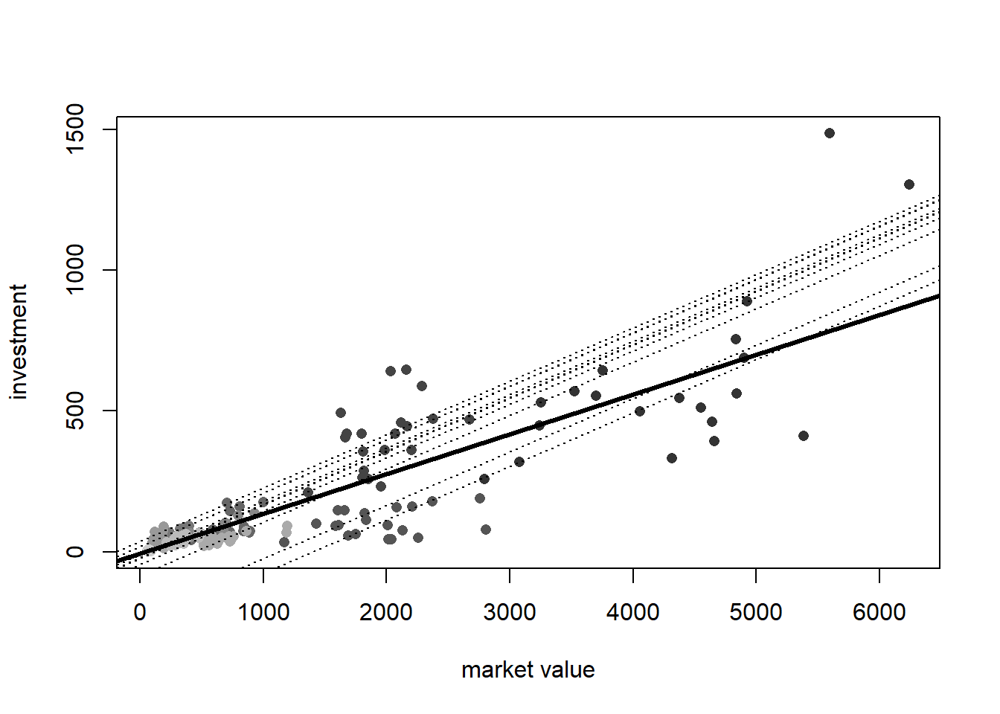
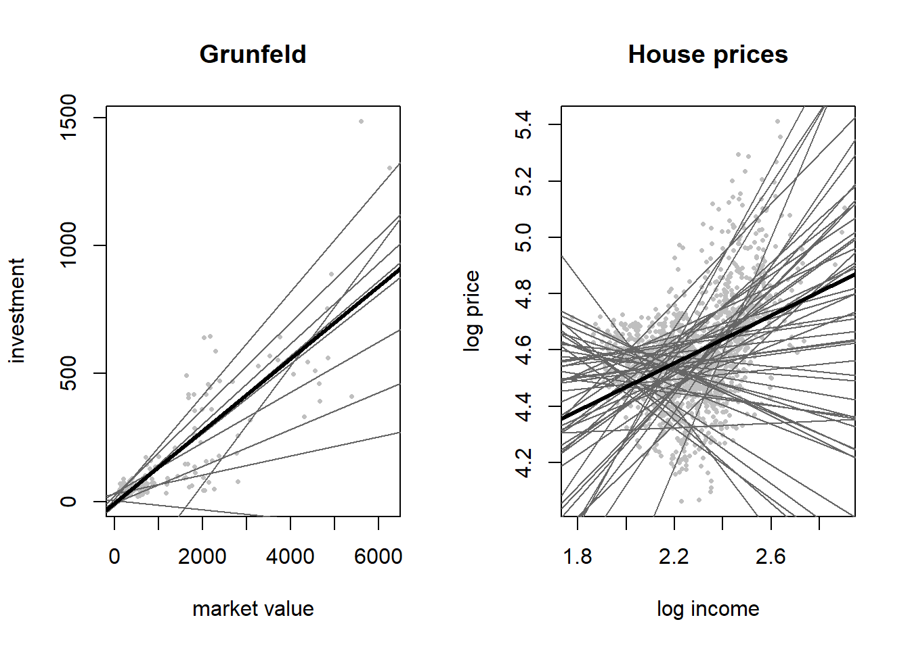
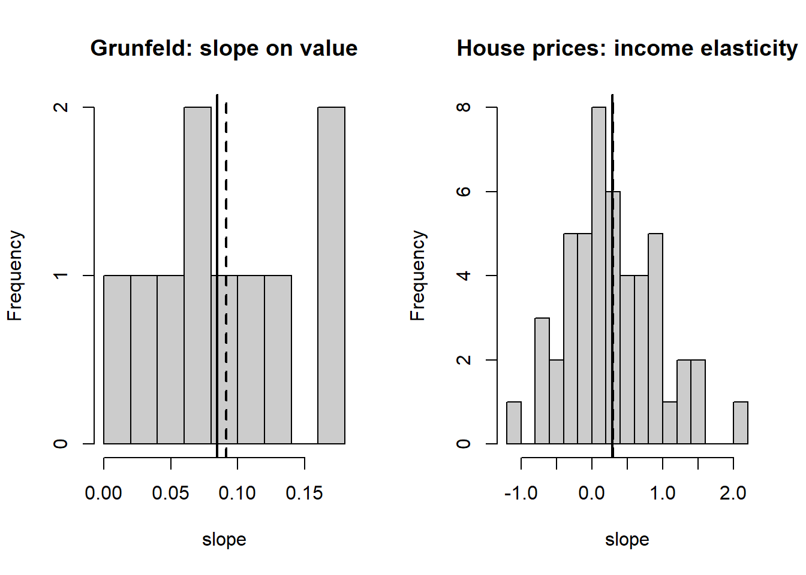
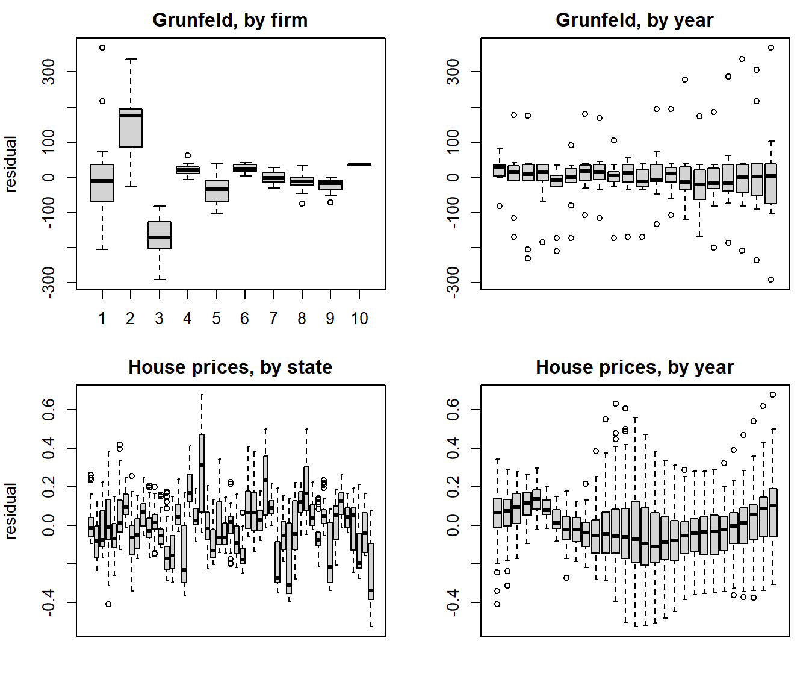
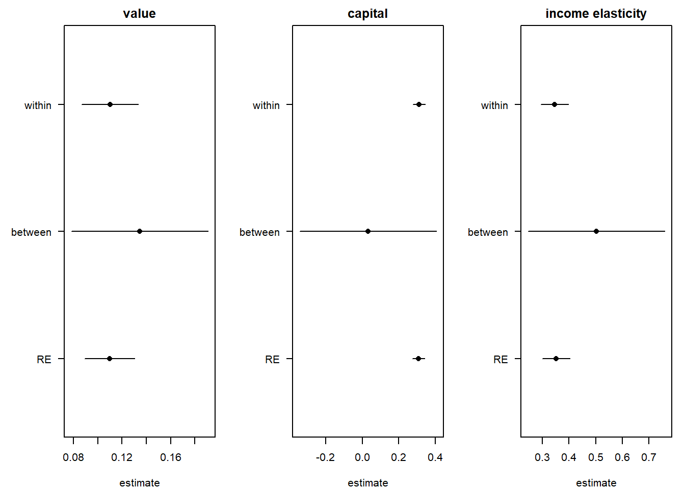
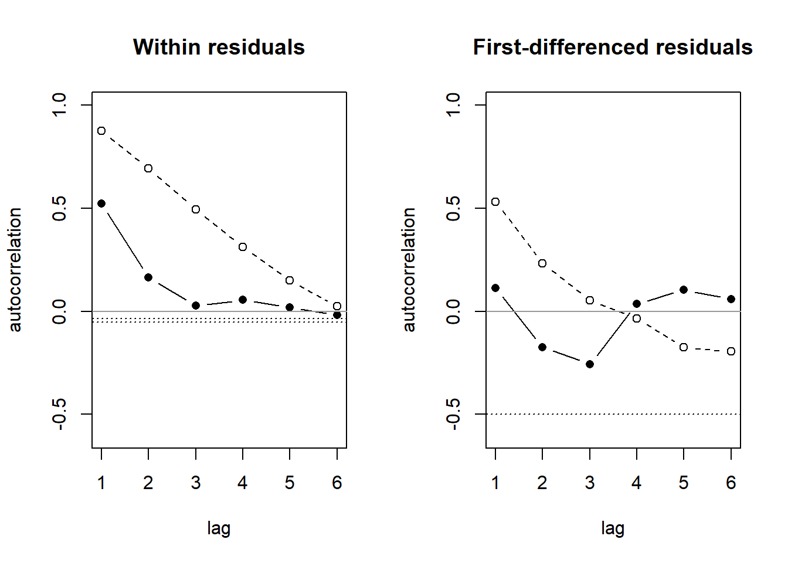
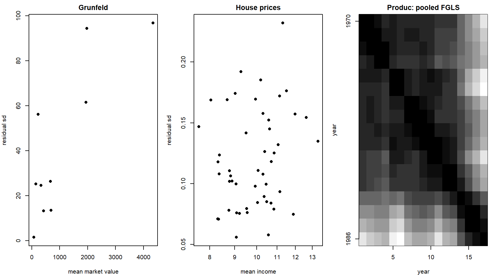
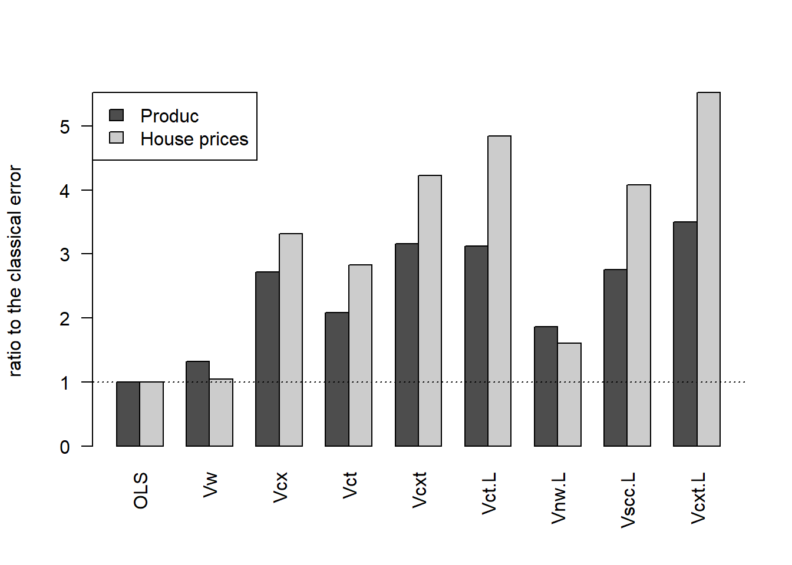

devtools::load_all(quiet = TRUE)
# pooltest()'s formula method builds a call to plm(), so plm must be
# attached, not just namespaced.
library(plm)
data("Grunfeld", package = "plm")
data("Produc", package = "plm")
data("Wages", package = "plm")
data("HousePricesUS", package = "pder")
gr <- plm::pdata.frame(Grunfeld)
pr <- plm::pdata.frame(Produc)
wg <- plm::pdata.frame(Wages, index = 595)
hp <- plm::pdata.frame(HousePricesUS)
# phtest(method = "aux") cannot parse log() in a formula, so the logs are
# columns.
hp$lp <- log(hp$price)
hp$li <- log(hp$income)
fg <- inv ~ value + capital
fp <- log(gsp) ~ log(pcap) + log(pc) + log(emp) + unemp
fh <- lp ~ li6 Core panel models
In 1935 the largest of Grunfeld’s ten firms had a market value forty-three times that of the smallest, and invested a hundred and twenty-five times as much. Grunfeld (1958) followed the ten for twenty years to ask one question: does a firm invest more when the market values it more, and when it already owns more capital? The pooled answer is one line through two hundred points. But the largest firm is not the smallest on a larger scale. Each firm has a character of its own, management, product, luck, that the regressors do not see and that moves every one of its twenty observations the same way.
A panel regression with unit effects gives each unit its own intercept and lets the slopes be shared. The intercept is the unit’s character, and the whole chapter turns on what to assume about it. Under fixed effects it is a parameter, estimated from the unit’s own variation over time, and it may be correlated with the regressors. Under random effects it is a draw from a distribution, uncorrelated with the regressors, and it stays in the error term, where it makes a unit’s errors correlated across years. Why the two differ, and when they agree: fixed and random effects; what the error of a panel regression carries, and what to do about it: the error of a panel regression.
gr_pool1 <- plm::plm(inv ~ value, data = gr, model = "pooling")
gr_w1 <- plm::plm(inv ~ value, data = gr, model = "within")
firm <- plm::index(gr)[[1]]
plot(as.numeric(gr$value), as.numeric(gr$inv), pch = 16,
col = grDevices::grey(0.2 + 0.6 * (as.integer(firm) - 1) / 9),
xlab = "market value", ylab = "investment")
graphics::abline(coef(gr_pool1), lwd = 3)
for (a in plm::fixef(gr_w1)) graphics::abline(a, coef(gr_w1), lty = 3)
The thin lines are the one-way error-component model, the equation that organises the chapter (Baltagi 2021, eqs. 2.1–2.2):
\[ y_{it} = x_{it}'\beta + \alpha_i + \varepsilon_{it}, \qquad i = 1, \dots, N;\; t = 1, \dots, T, \]
where \(\alpha_i\) is the unit effect and \(\varepsilon_{it}\) the idiosyncratic error (Baltagi writes them \(\mu_i\) and \(\nu_{it}\)). Fixed effects estimates \(\beta\) from deviations around each unit’s own mean, so \(\alpha_i\) drops out. Random effects treats \(\alpha_i + \varepsilon_{it}\) as one error with a known shape and weights the within and between variation by how much each is worth. The chapter’s tests ask, in order, whether the slopes can be shared at all, whether \(\alpha_i\) is there, whether it is a parameter or a draw, what else \(\varepsilon_{it}\) carries, and which standard error is honest about it.
In this chapter.
- Poolability. Can one line serve every unit, or every unit with its own intercept (poolability).
- Slope heterogeneity. How far apart the units’ slopes are, and whether the average is still worth reporting (slope heterogeneity).
- Effects tests. Whether a unit effect, a year effect, or both are there at all (effects tests).
- Fixed or random. Whether the unit effect moves with the regressors, and what to do when a regressor never moves over time (fixed or random).
- Serial correlation. Whether this year’s shock carries into next year’s, and whether fixed effects or first differences is the better estimator (serial correlation).
- Heteroskedasticity. Whether big units have bigger shocks, and which estimates survive it (heteroskedasticity).
- Robust errors. The menu of standard errors, and which dependence each one survives (robust errors).
- Summary (summary).
Two panels run through every step. Grunfeld’s investment panel carries the book checks: Baltagi (2021) prints Tables 4.2, 4.3, 4.4, 4.6 and 5.3 and the poolability example of section 4.1.3 on it, so the book’s numbers come out of the calls in the text. House prices carry the story forward: HousePricesUS (Holly et al. 2010), 49 states over 29 years, whose income elasticity the cross-dependence chapter estimated state by state and averaged, and whose errors left the spatial chapter with a serial correlation of 0.82. The public-capital panel Produc (Munnell 1990), 48 states over 17 years, joins for the heteroskedasticity and robust-error steps, where Croissant and Millo (2019) print their tables on it; Wages, 595 workers over 7 years, appears once, for the Hausman–Taylor estimator.
Every section has the shape of the spatial chapter: question, intuition, the test in words, run it, a picture, read it, a next box, and collapsed recipe, pitfalls and book check boxes at the end.
6.1 Poolability
Question. Can one investment equation serve all ten firms, and one price–income elasticity all 49 states, or does each need its own?
Intuition. Fit one regression to everyone, then one to each unit, and compare the residual sums of squares. If the single line fits almost as well as the ten, pooling costs nothing and buys precision; if it fits much worse, the units do not share the line. Chow’s F does exactly this (Chow 1960; Baltagi 2021, 77). The restricted model can be pooled OLS, which forces all coefficients to be equal, or the within regression, which gives every unit its own intercept and forces only the slopes to be equal. Under random effects the errors of one unit are correlated across years, the Chow F is no longer an F, and it rejects a true null far too often (Baltagi 1981; 2021, 79). The Roy–Zellner test runs the same F on the data after the GLS transformation, where the errors are spherical (uncorrelated, with one variance) again (Roy 1957; Zellner 1962; Baltagi 2021, 78–79).
What “one regression” assumes about the units: fixed and random effects. Why the transformation restores the F: the error of a panel regression.
With \(e\) the residuals of the restricted model and \(e_i\) those of unit \(i\)’s own regression, \(K'\) counting the intercept (Baltagi 2021, eq. 4.8),
\[ F = \frac{\left(e'e - \sum_i e_i'e_i\right) / (N - 1)K'} {\sum_i e_i'e_i / N(T - K')} \;\sim\; F\big((N - 1)K',\, N(T - K')\big). \]
The Roy–Zellner statistic is the same ratio after \(y\) and \(X\) have been premultiplied by \(\Omega^{-1/2}\), the inverse square root of the error-component covariance (Baltagi 2021, eq. 4.14); with one-way effects that is quasi-demeaning by \(\theta\), each variable less \(\theta\) times its unit mean.
The tests. pooltest (Croissant and Millo 2019, sec. 8.2.3): model = "pooling" restricts all coefficients, model = "within" the slopes only, and effect = "time" asks the same question across years. roy_zellner() from R/ is the GLS version. Null: the coefficients are the same for every unit. A rejection means the units do not share the line.
Run it, Grunfeld. Investment on market value and capital stock, ten firms, twenty years:
plm::pooltest(fg, data = gr, model = "pooling")
plm::pooltest(fg, data = gr, model = "within")
plm::pooltest(fg, data = gr, model = "pooling", effect = "time")
roy_zellner(fg, gr)
F statistic
data: fg
F = 27.749, df1 = 27, df2 = 170, p-value < 2.2e-16
alternative hypothesis: unstability
F statistic
data: fg
F = 5.7805, df1 = 18, df2 = 170, p-value = 1.219e-10
alternative hypothesis: unstability
F statistic
data: fg
F = 1.1204, df1 = 57, df2 = 140, p-value = 0.2928
alternative hypothesis: unstability
Roy-Zellner test for poolability across units
data: inv ~ value + capital
F = 4.3466, df1 = 27, df2 = 170, p-value = 1.432e-09Run it, house prices. Log price on log income, 49 states, 29 years. The unrestricted fit, one regression per state, is kept: the next step reads its slopes.
plm::pooltest(fh, data = hp, model = "pooling")
plm::pooltest(fh, data = hp, model = "within")
hp_np <- plm::pvcm(fh, data = hp, model = "within")
F statistic
data: fh
F = 25.778, df1 = 96, df2 = 1323, p-value < 2.2e-16
alternative hypothesis: unstability
F statistic
data: fh
F = 16.074, df1 = 48, df2 = 1323, p-value < 2.2e-16
alternative hypothesis: unstabilityThe dispersion the F measures, drawn: each unit’s own line over the pooled one.
unit_lines <- function(y, x, g, main, xlab, ylab) {
plot(x, y, pch = 16, cex = 0.5, col = "grey75", main = main,
xlab = xlab, ylab = ylab)
for (k in levels(g)) {
i <- g == k
graphics::abline(lm(y[i] ~ x[i]), col = "grey40")
}
graphics::abline(lm(y ~ x), lwd = 3)
}
op <- graphics::par(mfrow = c(1, 2))
unit_lines(as.numeric(gr$inv), as.numeric(gr$value), plm::index(gr)[[1]],
"Grunfeld", "market value", "investment")
unit_lines(as.numeric(hp$lp), as.numeric(hp$li), plm::index(hp)[[1]],
"House prices", "log income", "log price")
graphics::par(op)Read it.
- Rejects (across units, both panels). Grunfeld 27.7 on F(27, 170) for all coefficients and 5.78 on F(18, 170) for the slopes alone; house prices 25.8 on F(96, 1323) and 16.1 on F(48, 1323). So: neither panel pools, even when every unit keeps its own intercept.
- Does not reject (Grunfeld across years). 1.12 on F(57, 140), p = 0.29. So: the firms’ lines are stable over time; the heterogeneity is across firms, not across years.
- Misleads (the plain Chow F under random effects). Roy–Zellner gives 4.35 on F(27, 170), still a rejection, but a sixth of the plain 27.7. So: with a firm effect this large (72 % of the error variance, fixed or random) most of the plain F was the firm effect, not the slopes; Baltagi’s Monte Carlo shows the plain F rejecting a true null often when the variance components are large (Baltagi 1981; 2021, 79).
Next. Rejected: how far apart are the slopes, and is the average still worth estimating (slope heterogeneity)? Not rejected: pooled OLS, then the effects tests, which decide whether even the intercepts need to differ.
NoteRecipe
# f: a formula; d: a pdata.frame. plm must be attached for pooltest.
plm::pooltest(f, data = d, model = "pooling") # all coefficients
plm::pooltest(f, data = d, model = "within") # slopes only
plm::pooltest(f, data = d, model = "pooling", effect = "time")
roy_zellner(f, d) # under random effects
CautionPitfalls
pooltest needs plm attached. Its formula method calls plm() unqualified, and plm::pooltest() alone fails with “could not find function”. The setup chunk attaches the package for that reason.
Two nulls, one function. model = "pooling" tests all coefficients, model = "within" the slopes only. Baltagi’s “poolability across firms” is the first, “poolability of slopes only” the second (Baltagi 2021, 80). Report which one was run.
Rejected does not mean no pooled slope. The pooled slope with unit effects is still the average effect; what the rejection says is that the dispersion around it has to be reported beside it. That is the mean-group estimator of the cross-dependence chapter and the next step.
Roy–Zellner is not in plm. roy_zellner() is one-way and refuses an unbalanced panel. It uses the Swamy–Arora θ (Swamy and Arora 1972) of plm::ercomp(); Baltagi’s Monte Carlo used the Amemiya (Amemiya 1971) and Wallace–Hussain (Wallace and Hussain 1969) variance estimates, and both gave the test the right size (Baltagi 2021, 79).
TipBook check
Baltagi (2021, sec. 4.1.3, Example 1, p. 80) prints, for Grunfeld, 27.75 on F(27, 170) for all coefficients, 5.78 on F(18, 170) for the slopes, 1.12 on F(57, 140) across time, and 4.35 on F(27, 170) for Roy–Zellner across firms. The c05-1-gr chunk above gives 27.749, 5.7805, 1.1204 and 4.3466: all four reproduced.
Croissant and Millo (2019, sec. 8.2.3, Example 8.4, p. 194) print 26 on df (96, 1300) against pooling and 16 on df (48, 1300) against within for house prices, with two significant digits. The c05-1-hp chunk gives 25.778 and 16.074 on df (96, 1323) and (48, 1323): the statistics reproduce; the printed denominator df is rounded to 1300, and the exact value is \(N(T - K - 1) = 49 \times 27 = 1323\).
6.2 Slope heterogeneity
Question. When the slopes differ, how much do they differ, and is the spread more than sampling noise would give?
Intuition. Estimate each unit’s own regression and look at the spread of the slopes. Part of the spread is sampling noise, because each slope comes from only \(T\) observations; the rest is real. Swamy’s random-coefficients model treats each unit’s coefficient vector as a draw around a common mean and estimates the variance of the draws, net of the noise (Swamy 1970; Croissant and Millo 2019, sec. 8.2.2). A large estimated variance says the units genuinely differ; a mean with a standard deviation of its own size says the average is one number among many. The mean group estimator of the cross-dependence chapter is the plain average of the unit slopes, and its dispersion is their empirical covariance; it is the Swamy estimator with equal weights, and the two converge as \(T\) grows (Croissant and Millo 2019, 190).
Random coefficients as an error-component model, and why their covariance can come back negative: the error of a panel regression.
With \(\hat\beta_n\) unit \(n\)’s OLS slopes, \(\bar\beta\) their average and \(\hat\sigma_n^2\) unit \(n\)’s residual variance, Swamy’s estimate of the dispersion of the draws is (Croissant and Millo 2019, 188)
\[ \hat\Delta = \frac{1}{N - 1}\sum_{n} (\hat\beta_n - \bar\beta)(\hat\beta_n - \bar\beta)' \;-\; \frac{1}{N}\sum_{n} \hat\sigma_n^2 (Z_n'Z_n)^{-1}, \]
the raw spread of the slopes less what sampling noise contributes. Swamy’s own test of equal slopes is the weighted sum of squared distances of the \(\hat\beta_n\) from a pooled estimate, \(\chi^2\) with \((N - 1)K\) degrees of freedom as \(T \to \infty\) with \(N\) fixed (Swamy 1970; Baltagi 2021, 102). For the panels this book worries about, many units and few periods, Pesaran and Yamagata (2008) standardise that statistic: their \(\Delta\) is \(\sqrt{N}\,(S/N - K)/\sqrt{2K}\), normal as \(N\) and \(T\) grow together under a rate condition of the form \(\sqrt{N}/T \to 0\) or \(\sqrt{N}/T^2 \to 0\), depending on which residual variance it uses; the adjusted version keeps its size even when \(T\) is very small relative to \(N\) (Pesaran and Yamagata 2008; Baltagi 2021, 102). Blomquist and Westerlund (2013) give a version robust to serial correlation.
The tests. pvcm(model = "within") (Croissant and Millo 2019, 187) and its summary(), the spread of the unit slopes; pvcm(model = "random"), Swamy’s mean and $Delta, and the homogeneity test its summary() prints; pmg(model = "mg"), the mean-group comparison. Null, for the homogeneity test: the slopes are the same for every unit (Swamy 1970; Baltagi 2021, 102). A rejection means the spread is more than noise.
Limitation. Pesaran–Yamagata’s \(\Delta\) and its HAC (heteroskedasticity- and autocorrelation-consistent) version have no implementation in the packages this book uses; the Swamy test printed below is the \(N\) fixed, \(T \to \infty\) statistic it was built to replace. Benchmark: Stata xthst (Bersvendsen and Ditzen 2021), deferred.
Run it, Grunfeld. The spread of the ten firms’ slopes, then Swamy’s mean with the standard deviation of the draws beside it:
gr_np <- plm::pvcm(fg, data = gr, model = "within")
summary(gr_np)Oneway (individual) effect No-pooling model
Call:
plm::pvcm(formula = fg, data = gr, model = "within")
Balanced Panel: n = 10, T = 20, N = 200
Residuals:
Min. 1st Qu. Median 3rd Qu. Max.
-184.4884 -7.1183 -0.3926 5.7029 144.0353
Coefficients:
(Intercept) value capital
Min. :-149.782 Min. :0.004573 Min. :0.003102
1st Qu.: -9.639 1st Qu.:0.058518 1st Qu.:0.087132
Median : -6.956 Median :0.082738 Median :0.137738
Mean : -21.368 Mean :0.091285 Mean :0.205264
3rd Qu.: -1.507 3rd Qu.:0.128411 3rd Qu.:0.357513
Max. : 22.707 Max. :0.174856 Max. :0.437369
Total Sum of Squares: 474010000
Residual Sum of Squares: 324730
Multiple R-Squared: 0.99931gr_sw <- plm::pvcm(fg, data = gr, model = "random")
summary(gr_sw)
cbind(mean = coef(gr_sw), sd = sqrt(diag(gr_sw$Delta)))Oneway (individual) effect Random coefficients model
Call:
plm::pvcm(formula = fg, data = gr, model = "random")
Balanced Panel: n = 10, T = 20, N = 200
Residuals:
Min. 1st Qu. Median Mean 3rd Qu. Max.
-211.486 -32.321 -4.283 9.048 12.715 579.216
Estimated mean of the coefficients:
Estimate Std. Error z-value Pr(>|z|)
(Intercept) -9.629285 17.035040 -0.5653 0.5718946
value 0.084587 0.019956 4.2387 2.248e-05 ***
capital 0.199418 0.052653 3.7874 0.0001522 ***
---
Signif. codes: 0 '***' 0.001 '**' 0.01 '*' 0.05 '.' 0.1 ' ' 1
Estimated variance of the coefficients:
(Intercept) value capital
(Intercept) 2344.24402 -0.6852340 -4.0276612
value -0.68523 0.0031182 -0.0011847
capital -4.02766 -0.0011847 0.0244824
Total Sum of Squares: 474010000
Residual Sum of Squares: 2194300
Multiple R-Squared: 0.99537
Chisq: 38.8364 on 2 DF, p-value: 3.6878e-09
Test for parameter homogeneity: Chisq = 901.43 on 27 DF, p-value: < 2.22e-16
mean sd
(Intercept) -9.62928514 48.41739380
value 0.08458734 0.05584066
capital 0.19941840 0.15646861Run it, house prices. The same on the 49 state slopes from poolability, with the mean-group average beside Swamy’s:
summary(hp_np)Oneway (individual) effect No-pooling model
Call:
plm::pvcm(formula = fh, data = hp, model = "within")
Balanced Panel: n = 49, T = 29, N = 1421
Residuals:
Min. 1st Qu. Median 3rd Qu. Max.
-0.279007 -0.069922 -0.005819 0.064750 0.352410
Coefficients:
(Intercept) li
Min. :-0.2951 Min. :-1.1409
1st Qu.: 3.1519 1st Qu.:-0.1378
Median : 4.1457 Median : 0.2283
Mean : 3.8498 Mean : 0.3018
3rd Qu.: 4.7773 3rd Qu.: 0.6614
Max. : 6.9108 Max. : 2.0369
Total Sum of Squares: 3870.1
Residual Sum of Squares: 13.739
Multiple R-Squared: 0.99645hp_sw <- plm::pvcm(fh, data = hp, model = "random")
summary(hp_sw)
hp_mg <- plm::pmg(fh, data = hp, model = "mg")
cbind(Swamy = coef(hp_sw), MG = coef(hp_mg))Oneway (individual) effect Random coefficients model
Call:
plm::pvcm(formula = fh, data = hp, model = "random")
Balanced Panel: n = 49, T = 29, N = 1421
Residuals:
Min. 1st Qu. Median Mean 3rd Qu. Max.
-0.48330 -0.06596 0.03954 0.04156 0.13998 0.76807
Estimated mean of the coefficients:
Estimate Std. Error z-value Pr(>|z|)
(Intercept) 3.891424 0.202808 19.1877 < 2.2e-16 ***
li 0.286701 0.092786 3.0899 0.002002 **
---
Signif. codes: 0 '***' 0.001 '**' 0.01 '*' 0.05 '.' 0.1 ' ' 1
Estimated variance of the coefficients:
(Intercept) li
(Intercept) 1.85952 -0.85097
li -0.85097 0.39166
Total Sum of Squares: 3870.1
Residual Sum of Squares: 42.703
Multiple R-Squared: 0.98897
Chisq: 9.5477 on 1 DF, p-value: 0.002002
Test for parameter homogeneity: Chisq = 2439.83 on 96 DF, p-value: < 2.22e-16
Swamy MG
(Intercept) 3.8914242 3.8498054
li 0.2867014 0.3018117The spread, drawn: a histogram of the unit slopes for each panel, with the two averages marked.
gr_mg <- plm::pmg(fg, data = gr, model = "mg")
op <- graphics::par(mfrow = c(1, 2))
graphics::hist(coef(gr_np)$value, breaks = 10, col = "grey80",
main = "Grunfeld: slope on value", xlab = "slope")
graphics::abline(v = coef(gr_sw)["value"], lwd = 2)
graphics::abline(v = coef(gr_mg)["value"], lwd = 2, lty = 2)
graphics::hist(coef(hp_np)$li, breaks = 15, col = "grey80",
main = "House prices: income elasticity", xlab = "slope")
graphics::abline(v = coef(hp_sw)["li"], lwd = 2)
graphics::abline(v = coef(hp_mg)["li"], lwd = 2, lty = 2)
graphics::par(op)Read it.
- Rejects (house prices). Swamy’s homogeneity test 2440 on 96 degrees of freedom. The state elasticities run from −1.14 to 2.04; Swamy’s mean is 0.287 and the mean-group average 0.302, and the standard deviation of the draws, 0.63, is twice the mean. So: the income elasticity is not one number, and the mean-group choice of the cross-dependence chapter was right: report the average with its spread.
- Rejects (Grunfeld). 901 on 27 degrees of freedom. The slopes on market value run from 0.005 to 0.175 around a mean of 0.085, with a standard deviation of the draws of 0.056. So: the firms differ in slope as much as in scale; the pooled slope of the next steps is an average over firms that do not share it.
- Does not reject. No case on these panels. A panel whose unit lines agree would print a small homogeneity statistic and a
$Deltadiagonal near zero; neither panel here comes close.
Next. Whatever the spread, the effects tests come next: a pooled slope with unit effects is the average effect, and the question is what kind of effect sits under it.
NoteRecipe
# f: a formula; d: a pdata.frame.
np <- plm::pvcm(f, data = d, model = "within") # one fit per unit
summary(np) # spread of the slopes
sw <- plm::pvcm(f, data = d, model = "random") # Swamy
cbind(coef(sw), sqrt(diag(sw$Delta))) # mean, sd of the draws
plm::pmg(f, data = d, model = "mg") # mean group
CautionPitfalls
Swamy’s covariance can come back non-positive-definite. The second term of \(\hat\Delta\) is subtracted, and with few periods it can exceed the first. The mean-group dispersion omits that term, is biased but always non-negative definite, and Swamy himself proposed it as the fallback (Croissant and Millo 2019, 190).
Swamy’s test is a large-\(T\) test. Its \(\chi^2\) holds as \(T \to
\infty\) with \(N\) fixed (Baltagi 2021, 102); on a panel with many units and few periods it over-rejects, and the extent of the over-rejection shrinks only as \(T\) grows relative to \(N\) (Pesaran and Yamagata 2008; Baltagi 2021, 102). \(\Delta\) is the test built for \(N \gg T\), and its absence here is a gap of the tools, not of the method. Benchmark: Stata xthst, deferred.
The Hausman-type test has no power. A test of the fixed-effects slope against the mean-group average keeps its size but has no power against random draws around a common mean, whatever the sample size (Pesaran and Yamagata 2008; Baltagi 2021, 102). Do not read “FE equals MG” as homogeneity.
TipBook check
Croissant and Millo (2019, sec. 8.2.2, Example 8.2, p. 190) print Swamy 0.2867 and mean group 0.3018 for the income elasticity: the c05-2-hp-swamy chunk gives 0.2867 and 0.3018, reproduced. Their summary(housep.np) (Croissant and Millo 2019, sec. 8.2.3, Example 8.4, pp. 193–194) prints mean 0.302, min −1.141, max 2.037 for the state elasticities: the c05-2-hp-np chunk gives 0.3018, −1.1409 and 2.0369, reproduced. Their Figure 8.1 (Croissant and Millo 2019, 193) is the right-hand histogram above. No target for Pesaran–Yamagata: no implementation in R.
6.3 Effects tests
Question. Is there a firm effect in investment, a year effect, both, or neither, so that pooled OLS would do?
Intuition. If there is no firm effect, a firm’s twenty pooled-OLS residuals are just twenty draws, and their sum is about as large as the square root of their sum of squares. If there is a firm effect, the twenty residuals share a sign and the sum is far larger. The Breusch–Pagan Lagrange-multiplier (LM) test, which needs only the pooled residuals, squares the ratio of “sum of a unit’s residuals” to “sum of their squares”, summed over units (Breusch and Pagan 1980; Baltagi 2021, eq. 4.23). A variance cannot be negative, so the alternative is one-sided: Honda’s test takes the signed square root, is normal, uniformly most powerful for this null, and robust to non-normality (Honda 1985; Baltagi 2021, 83). For a unit effect and a year effect together, King–Wu weights the two one-sided pieces (King and Wu 1997; Baltagi 2021, eq. 4.30), and the GHM (Gourieroux–Holly–Monfort) test drops a negative piece instead of squaring it (Gourieroux et al. 1982; Baltagi 2021, eq. 4.33). The F test asks the same question of the fixed-effects fit: whether the unit dummies reduce the residual sum of squares by more than chance (Baltagi 2021, eq. 4.38).
Why the LM tests need only pooled residuals, and what the two-way versions assume: fixed and random effects.
With \(\tilde u\) the pooled OLS residuals and \(\bar J_T\) the \(T \times T\) averaging matrix, the one-sided statistic for a unit effect is (Baltagi 2021, eq. 4.25)
\[ A = \sqrt{\frac{NT}{2(T - 1)}} \left[\frac{\tilde u'(I_N \otimes \bar J_T)\tilde u}{\tilde u'\tilde u} - 1\right] \;\sim\; N(0, 1), \]
and \(A^2\) is the Breusch–Pagan statistic, \(\chi^2_1\) (Baltagi 2021, eq. 4.23). The year-effect statistic \(B\) swaps \(I_N \otimes \bar J_T\) for \(\bar J_N \otimes I_T\) (Baltagi 2021, eq. 4.29). For both effects at once, Breusch–Pagan is \(A^2 + B^2 \sim \chi^2_2\), Honda’s “handy” statistic is \((A + B)/\sqrt 2\), King–Wu is (Baltagi 2021, eq. 4.30)
\[ KW = \sqrt{\frac{T - 1}{N + T - 2}}\, A + \sqrt{\frac{N - 1}{N + T - 2}}\, B \;\sim\; N(0, 1), \]
and GHM is \(A^2 + B^2\) when both are positive, \(A^2\) or \(B^2\) when only one is, and zero otherwise, with a mixed \(\chi^2\) distribution (Baltagi 2021, eq. 4.33).
The tests. plmtest (Croissant and Millo 2019, 88): type = "honda", "bp", "kw" for effect = "individual", "time" and "twoways", and type = "ghm" for "twoways". pFtest: the F test of the fixed-effects fit against the pooled one, or of the two-way fit against a one-way one. Null: no effect of that kind. A rejection means the units (or the years) share a component of the error.
Run it, Grunfeld. Pooled OLS first, then the three one-sided-or-not statistics for each hypothesis, one chunk per hypothesis.
gr_pool <- plm::plm(fg, data = gr, model = "pooling")
plm::plmtest(gr_pool, effect = "individual", type = "honda")
plm::plmtest(gr_pool, effect = "individual", type = "bp")
plm::plmtest(gr_pool, effect = "individual", type = "kw")
Lagrange Multiplier Test - (Honda)
data: fg
normal = 28.252, p-value < 2.2e-16
alternative hypothesis: significant effects
Lagrange Multiplier Test - (Breusch-Pagan)
data: fg
chisq = 798.16, df = 1, p-value < 2.2e-16
alternative hypothesis: significant effects
Lagrange Multiplier Test - (King and Wu)
data: fg
normal = 28.252, p-value < 2.2e-16
alternative hypothesis: significant effectsplm::plmtest(gr_pool, effect = "time", type = "honda")
plm::plmtest(gr_pool, effect = "time", type = "bp")
plm::plmtest(gr_pool, effect = "time", type = "kw")
Lagrange Multiplier Test - time effects (Honda)
data: fg
normal = -2.5404, p-value = 0.9945
alternative hypothesis: significant effects
Lagrange Multiplier Test - time effects (Breusch-Pagan)
data: fg
chisq = 6.4539, df = 1, p-value = 0.01107
alternative hypothesis: significant effects
Lagrange Multiplier Test - time effects (King and Wu)
data: fg
normal = -2.5404, p-value = 0.9945
alternative hypothesis: significant effectsplm::plmtest(gr_pool, effect = "twoways", type = "honda")
plm::plmtest(gr_pool, effect = "twoways", type = "bp")
plm::plmtest(gr_pool, effect = "twoways", type = "kw")
plm::plmtest(gr_pool, effect = "twoways", type = "ghm")
Lagrange Multiplier Test - two-ways effects (Honda)
data: fg
normal = 18.181, p-value < 2.2e-16
alternative hypothesis: significant effects
Lagrange Multiplier Test - two-ways effects (Breusch-Pagan)
data: fg
chisq = 804.62, df = 2, p-value < 2.2e-16
alternative hypothesis: significant effects
Lagrange Multiplier Test - two-ways effects (King and Wu)
data: fg
normal = 21.832, p-value < 2.2e-16
alternative hypothesis: significant effects
Lagrange Multiplier Test - two-ways effects (Gourieroux, Holly and
Monfort)
data: fg
chibarsq = 798.16, df0 = 0.00, df1 = 1.00, df2 = 2.00, w0 = 0.25, w1 =
0.50, w2 = 0.25, p-value < 2.2e-16
alternative hypothesis: significant effectsThe F tests need the fixed-effects fits: one-way by firm, one-way by year, and two-way. The three two-way comparisons are the three rows of Baltagi (2021, Table 4.3): both effects against none, the year effect given the firm effect, the firm effect given the year effect.
gr_w <- plm::plm(fg, data = gr, model = "within")
gr_wt <- plm::plm(fg, data = gr, model = "within", effect = "time")
gr_w2 <- plm::plm(fg, data = gr, model = "within", effect = "twoways")
plm::pFtest(gr_w, gr_pool)
plm::pFtest(gr_w2, gr_pool)
plm::pFtest(gr_w2, gr_w)
plm::pFtest(gr_w2, gr_wt)
F test for individual effects
data: fg
F = 49.177, df1 = 9, df2 = 188, p-value < 2.2e-16
alternative hypothesis: significant effects
F test for twoways effects
data: fg
F = 17.403, df1 = 28, df2 = 169, p-value < 2.2e-16
alternative hypothesis: significant effects
F test for twoways effects
data: fg
F = 1.4032, df1 = 19, df2 = 169, p-value = 0.1309
alternative hypothesis: significant effects
F test for twoways effects
data: fg
F = 52.362, df1 = 9, df2 = 169, p-value < 2.2e-16
alternative hypothesis: significant effectsRun it, house prices. The same thirteen calls on log price and log income.
hp_pool <- plm::plm(fh, data = hp, model = "pooling")
plm::plmtest(hp_pool, effect = "individual", type = "honda")
plm::plmtest(hp_pool, effect = "individual", type = "bp")
plm::plmtest(hp_pool, effect = "individual", type = "kw")
Lagrange Multiplier Test - (Honda)
data: fh
normal = 59.983, p-value < 2.2e-16
alternative hypothesis: significant effects
Lagrange Multiplier Test - (Breusch-Pagan)
data: fh
chisq = 3598, df = 1, p-value < 2.2e-16
alternative hypothesis: significant effects
Lagrange Multiplier Test - (King and Wu)
data: fh
normal = 59.983, p-value < 2.2e-16
alternative hypothesis: significant effectsplm::plmtest(hp_pool, effect = "time", type = "honda")
plm::plmtest(hp_pool, effect = "time", type = "bp")
plm::plmtest(hp_pool, effect = "time", type = "kw")
Lagrange Multiplier Test - time effects (Honda)
data: fh
normal = 18.567, p-value < 2.2e-16
alternative hypothesis: significant effects
Lagrange Multiplier Test - time effects (Breusch-Pagan)
data: fh
chisq = 344.72, df = 1, p-value < 2.2e-16
alternative hypothesis: significant effects
Lagrange Multiplier Test - time effects (King and Wu)
data: fh
normal = 18.567, p-value < 2.2e-16
alternative hypothesis: significant effectsplm::plmtest(hp_pool, effect = "twoways", type = "honda")
plm::plmtest(hp_pool, effect = "twoways", type = "bp")
plm::plmtest(hp_pool, effect = "twoways", type = "kw")
plm::plmtest(hp_pool, effect = "twoways", type = "ghm")
Lagrange Multiplier Test - two-ways effects (Honda)
data: fh
normal = 55.543, p-value < 2.2e-16
alternative hypothesis: significant effects
Lagrange Multiplier Test - two-ways effects (Breusch-Pagan)
data: fh
chisq = 3942.7, df = 2, p-value < 2.2e-16
alternative hypothesis: significant effects
Lagrange Multiplier Test - two-ways effects (King and Wu)
data: fh
normal = 51.163, p-value < 2.2e-16
alternative hypothesis: significant effects
Lagrange Multiplier Test - two-ways effects (Gourieroux, Holly and
Monfort)
data: fh
chibarsq = 3942.7, df0 = 0.00, df1 = 1.00, df2 = 2.00, w0 = 0.25, w1 =
0.50, w2 = 0.25, p-value < 2.2e-16
alternative hypothesis: significant effectshp_w <- plm::plm(fh, data = hp, model = "within")
hp_wt <- plm::plm(fh, data = hp, model = "within", effect = "time")
hp_w2 <- plm::plm(fh, data = hp, model = "within", effect = "twoways")
plm::pFtest(hp_w, hp_pool)
plm::pFtest(hp_w2, hp_pool)
plm::pFtest(hp_w2, hp_w)
plm::pFtest(hp_w2, hp_wt)
F test for individual effects
data: fh
F = 23.225, df1 = 48, df2 = 1371, p-value < 2.2e-16
alternative hypothesis: significant effects
F test for twoways effects
data: fh
F = 25.622, df1 = 76, df2 = 1343, p-value < 2.2e-16
alternative hypothesis: significant effects
F test for twoways effects
data: fh
F = 16.845, df1 = 28, df2 = 1343, p-value < 2.2e-16
alternative hypothesis: significant effects
F test for twoways effects
data: fh
F = 31.582, df1 = 48, df2 = 1343, p-value < 2.2e-16
alternative hypothesis: significant effectsWhat the tests see, drawn: the pooled residuals grouped by unit and by year. A unit effect shows as boxes that sit at different heights; no year effect shows as boxes that sit at the same height.
e_gr <- as.numeric(residuals(gr_pool))
e_hp <- as.numeric(residuals(hp_pool))
op <- graphics::par(mfrow = c(2, 2), mar = c(3, 4, 2, 1))
graphics::boxplot(e_gr ~ plm::index(gr)[[1]], main = "Grunfeld, by firm",
xlab = "", ylab = "residual")
graphics::boxplot(e_gr ~ plm::index(gr)[[2]], main = "Grunfeld, by year",
xlab = "", ylab = "", xaxt = "n")
graphics::boxplot(e_hp ~ plm::index(hp)[[1]], main = "House prices, by state",
xlab = "", ylab = "residual", xaxt = "n")
graphics::boxplot(e_hp ~ plm::index(hp)[[2]], main = "House prices, by year",
xlab = "", ylab = "", xaxt = "n")
graphics::par(op)Read it.
- Rejects (firm effect, Grunfeld). Honda 28.3, Breusch–Pagan 798, F 49.2 on (9, 188). So: the ten firms do not share an intercept; pooled OLS is out, and the question becomes what kind of effect.
- Rejects (both effects, house prices). Honda 60.0 for states and 18.6 for years; F 31.6 for the state effect given the year effect and 16.8 for the year effect given the state effect. So: a state effect and a year effect; the two-way model, and the national force the cross-dependence chapter found is the year effect’s first draft.
- Does not reject (year effect, Grunfeld). Honda −2.54, p = 0.99; F 1.40 on (19, 169) given the firm effect, p = 0.13. So: no year effect; a one-way model for Grunfeld.
- Misleads (Breusch–Pagan on Grunfeld’s year effect). 6.45, p = 0.011: the square of a Honda statistic of −2.54, which says the estimated year variance is negative, which is to say zero. So: read the sign of the one-sided statistic; a two-sided test cannot see it (Baltagi 2021, 87). The joint statistics (804.6, 18.2, 21.8) reject too, on the strength of the firm effect alone.
Next. Effects found: are they draws or parameters (fixed or random)? None found: pooled OLS, then the error diagnostics of serial correlation, heteroskedasticity and robust errors, which pooled OLS needs as much as any fit.
NoteRecipe
# p: a pooled plm fit; w: the within fit of the same formula.
plm::plmtest(p, effect = "individual", type = "honda") # one-sided
plm::plmtest(p, effect = "time", type = "honda")
plm::plmtest(p, effect = "twoways", type = "ghm") # joint, sign-safe
plm::pFtest(w, p) # F on the dummies
CautionPitfalls
Honda’s sign. A negative one-sided statistic is “no effect”, not “an effect the wrong way”. Breusch–Pagan squares it and turns the Grunfeld year effect into a rejection at 1 %; so does any two-sided reading (Baltagi 2021, 87).
“twoways” is joint, not conditional. effect = "twoways" tests both variances at zero at once. The question “is there a firm effect, allowing for a year effect” is a different test, the conditional LM of Baltagi et al. (1992; Baltagi 2021, eqs. 4.34 and 4.36), which needs the one-way GLS residuals and has no implementation here. The pFtest(w2, w) and pFtest(w2, wt) calls are the F versions of that conditional question and are the ones to report when both effects are in play; ignoring a large year variance when testing the firm effect makes every unconditional test perform badly (Baltagi 2021, 86).
The standardized LM tests are missing. When the regressors are many, or their intra-class correlation is high, the normal approximation to Honda’s statistic is poor; the SLM test of Moulton and Randolph (1989) centres and scales it (Baltagi 2021, eq. 4.26), and Honda (1991) does the same for the two-way case. Neither is implemented; Baltagi (2021, Table 4.2) prints them, and the Book check reports them as not reproduced.
GHM is two-way only. type = "ghm" with a one-way effect stops with an error; the one-way one-sided test is Honda’s.
TipBook check
Baltagi (2021, Table 4.2, p. 88) prints sixteen LM statistics for Grunfeld, cross-section, time and both; the ten unstandardized ones are: Breusch–Pagan 798.1615, 6.453882, 804.6154; Honda 28.25175, −2.540449, 18.18064; King–Wu 28.25175, −2.540449, 21.83221; GHM 798.1615. To the printed digits:
bp <- c(plm::plmtest(gr_pool, effect = "individual", type = "bp")$statistic,
plm::plmtest(gr_pool, effect = "time", type = "bp")$statistic,
plm::plmtest(gr_pool, effect = "twoways", type = "bp")$statistic)
ho <- c(plm::plmtest(gr_pool, effect = "individual", type = "honda")$statistic,
plm::plmtest(gr_pool, effect = "time", type = "honda")$statistic,
plm::plmtest(gr_pool, effect = "twoways", type = "honda")$statistic)
kw <- c(plm::plmtest(gr_pool, effect = "individual", type = "kw")$statistic,
plm::plmtest(gr_pool, effect = "time", type = "kw")$statistic,
plm::plmtest(gr_pool, effect = "twoways", type = "kw")$statistic)
ghm <- plm::plmtest(gr_pool, effect = "twoways", type = "ghm")$statistic
tab <- rbind(`Breusch-Pagan` = bp, Honda = ho, `King-Wu` = kw,
GHM = c(NA, NA, ghm))
colnames(tab) <- c("Cross-section", "Time", "Both")
print(tab, digits = 7) Cross-section Time Both
Breusch-Pagan 798.16155 6.453882 804.61543
Honda 28.25175 -2.540449 18.18064
King-Wu 28.25175 -2.540449 21.83221
GHM NA NA 798.16155All ten reproduced to every printed digit. The Standardized Honda and King–Wu rows (32.66605, −2.432565, 16.29814; 32.66605, −2.432565, 20.96591) are not reproducible: no implementation.
Baltagi (2021, Table 4.3, p. 89) prints the F tests for redundant fixed effects: cross-section 52.362355 on (9, 169), period 1.403241 on (19, 169), both 17.403146 on (28, 169); and p. 88 the one-way F(9, 188) of 49.18.
c(both = plm::pFtest(gr_w2, gr_pool)$statistic,
period = plm::pFtest(gr_w2, gr_w)$statistic,
cross = plm::pFtest(gr_w2, gr_wt)$statistic,
oneway = plm::pFtest(gr_w, gr_pool)$statistic) both.F period.F cross.F oneway.F
17.403146 1.403241 52.362355 49.176625 All four reproduced. The chi-square rows of Table 4.3 (266.3955, 29.297556, 271.340224) are EViews’ likelihood-ratio form and were not run.
6.4 Fixed or random
Question. Does a firm’s unobserved character move with its capital stock? If it does, random effects is wrong; if it does not, fixed effects throws away precision.
Intuition. Fixed effects uses only the variation inside each unit over time, so whatever the unit effect is correlated with, it cannot bias the slope. Random effects also uses the variation between units, the differences in their means, and that is where a correlation between the effect and the regressors would bite. Under the null of no correlation both estimators are consistent and random effects is efficient; under the alternative only fixed effects is consistent (Baltagi 2021, 89–90). The Hausman test compares the two estimates: far apart means the between variation carries the correlation (Hausman 1978; Baltagi 2021, eq. 4.41). The same test is an F on extra regressors in an augmented regression, which is how it is made robust (Arellano 1993; Baltagi 2021, 92). Mundlak’s model says why: if the unit effect is a linear function of the unit’s mean regressors, GLS on the model augmented with those means is the within estimator, and the test is whether the means matter (Mundlak 1978; Croissant and Millo 2019, 90). When a regressor never moves over time, education in a wage equation, fixed effects cannot estimate its coefficient at all; Hausman–Taylor keeps it, instrumenting the endogenous regressors with the exogenous ones (Hausman and Taylor 1981; Baltagi 2021, sec. 7.4).
GLS as a weighted average of within and between, the three equivalent Hausman contrasts, Chamberlain’s Π matrix and Hausman–Taylor’s instrument set: fixed and random effects.
With \(\hat q = \hat\beta_{GLS} - \hat\beta_{Within}\), the covariance of the contrast is the difference of the covariances, because the efficient estimator is uncorrelated with its distance from any other consistent one (Baltagi 2021, eq. 4.40):
\[ m = \hat q'\,[\operatorname{var}(\hat\beta_{Within}) - \operatorname{var}(\hat\beta_{GLS})]^{-1}\,\hat q \;\sim\; \chi^2_K . \]
The augmented regression puts the within-transformed regressors next to the GLS-transformed ones (Baltagi 2021, eq. 4.42),
\[ y^* = X^*\beta + \tilde X\gamma + w, \]
and tests \(\gamma = 0\); the coefficient on \(\tilde X\) is \(\hat\beta_{Within} - \hat\beta_{Between}\), and the three contrasts (GLS–within, GLS–between, within–between) give the same statistic (Hausman and Taylor 1981; Baltagi 2021, eqs. 4.46–4.48 and p. 91). A robust covariance in that regression is the robust Hausman test (Arellano 1993; Baltagi 2021, 92).
The tests. phtest (Croissant and Millo 2019, sec. 4.2.2, Examples 5.9–5.10): method = "chisq", the contrast; method = "aux", the augmented regression; method = "aux", vcov = plm::vcovHC, the same with clustered errors. Null: the unit effect is uncorrelated with the regressors, so both estimators are consistent (Baltagi 2021, 90). A rejection means random effects is inconsistent. Chamberlain’s test of the fixed-effects restrictions and the Angrist–Newey version are piest and aneweytest (Chamberlain 1982; Angrist and Newey 1991; Croissant and Millo 2019, 94–95); Hausman–Taylor is plm(model = "random", random.method = "ht", inst.method = "baltagi"), with inst.method = "am" for the Amemiya–MaCurdy instruments (Amemiya and MaCurdy 1986).
Run it, Grunfeld. The one-way contrast three ways, then the two-way contrast under two variance-component estimators:
gr_re <- plm::plm(fg, data = gr, model = "random")
plm::ercomp(gr_re)
plm::phtest(gr_w, gr_re)
plm::phtest(fg, data = gr, method = "aux")
plm::phtest(fg, data = gr, method = "aux", vcov = plm::vcovHC) var std.dev share
idiosyncratic 2784.46 52.77 0.282
individual 7089.80 84.20 0.718
theta: 0.8612
Hausman Test
data: fg
chisq = 2.3304, df = 2, p-value = 0.3119
alternative hypothesis: one model is inconsistent
Regression-based Hausman test
data: fg
chisq = 2.1314, df = 2, p-value = 0.3445
alternative hypothesis: one model is inconsistent
Regression-based Hausman test, vcov: plm::vcovHC
data: fg
chisq = 8.2998, df = 2, p-value = 0.01577
alternative hypothesis: one model is inconsistentgr_re2 <- plm::plm(fg, data = gr, model = "random", effect = "twoways")
plm::ercomp(gr_re2)
plm::phtest(gr_w2, gr_re2)
gr_re2a <- plm::plm(fg, data = gr, model = "random", effect = "twoways",
random.method = "amemiya")
plm::ercomp(gr_re2a)
plm::phtest(gr_w2, gr_re2a) var std.dev share
idiosyncratic 2675.43 51.72 0.274
individual 7095.25 84.23 0.726
time 0.00 0.00 0.000
theta: 0.864 (id) 0 (time) 0 (total)
Hausman Test
data: fg
chisq = 13.46, df = 2, p-value = 0.001194
alternative hypothesis: one model is inconsistent
var std.dev share
idiosyncratic 2644.13 51.42 0.256
individual 7452.02 86.33 0.721
time 243.78 15.61 0.024
theta: 0.868 (id) 0.2787 (time) 0.2776 (total)
Hausman Test
data: fg
chisq = 8.9626, df = 2, p-value = 0.01132
alternative hypothesis: one model is inconsistentRun it, house prices. The same on the precomputed logs:
hp_re <- plm::plm(fh, data = hp, model = "random")
plm::ercomp(hp_re)
plm::phtest(hp_w, hp_re)
plm::phtest(fh, data = hp, method = "aux")
plm::phtest(fh, data = hp, method = "aux", vcov = plm::vcovHC) var std.dev share
idiosyncratic 0.01587 0.12596 0.565
individual 0.01223 0.11059 0.435
theta: 0.7931
Hausman Test
data: fh
chisq = 1.392, df = 1, p-value = 0.2381
alternative hypothesis: one model is inconsistent
Regression-based Hausman test
data: fh
chisq = 1.3829, df = 1, p-value = 0.2396
alternative hypothesis: one model is inconsistent
Regression-based Hausman test, vcov: plm::vcovHC
data: fh
chisq = 1.7845, df = 1, p-value = 0.1816
alternative hypothesis: one model is inconsistenthp_re2 <- plm::plm(fh, data = hp, model = "random", effect = "twoways")
plm::ercomp(hp_re2)
plm::phtest(hp_w2, hp_re2)
hp_re2a <- plm::plm(fh, data = hp, model = "random", effect = "twoways",
random.method = "amemiya")
plm::phtest(hp_w2, hp_re2a) var std.dev share
idiosyncratic 0.011987 0.109484 0.441
individual 0.012365 0.111196 0.454
time 0.002854 0.053423 0.105
theta: 0.8201 (id) 0.719 (time) 0.6924 (total)
Hausman Test
data: fh
chisq = 58.644, df = 1, p-value = 1.89e-14
alternative hypothesis: one model is inconsistent
Hausman Test
data: fh
chisq = 25.617, df = 1, p-value = 4.164e-07
alternative hypothesis: one model is inconsistentRun it, wages. The Cornwell–Rupert equation on Wages, 595 workers over 1976–82 (Cornwell and Rupert 1988; Baltagi 2021, 173–74): log wage on weeks worked, region, city, marital status, experience and its square, occupation, industry, union, sex, race and education. The second part of the formula lists the exogenous regressors, time-varying and not; the third the endogenous time-varying ones. Education is time-invariant and endogenous, the case the estimator exists for.
fw <- lwage ~ wks + south + smsa + married + exp + I(exp^2) + bluecol +
ind + union + sex + black + ed |
bluecol + south + smsa + ind + sex + black |
wks + married + union + exp + I(exp^2)
wg_ht <- plm::plm(fw, data = wg, model = "random", random.method = "ht",
inst.method = "baltagi")
summary(wg_ht)
wg_am <- plm::plm(fw, data = wg, model = "random", random.method = "ht",
inst.method = "am")
coef(summary(wg_am))[c("(Intercept)", "ed"), ]Oneway (individual) effect Random Effect Model
(Hausman-Taylor's transformation)
Instrumental variable estimation
(Baltagi's transformation)
Call:
plm::plm(formula = fw, data = wg, model = "random", random.method = "ht",
inst.method = "baltagi")
Balanced Panel: n = 595, T = 7, N = 4165
Effects:
var std.dev share
idiosyncratic 0.02304 0.15180 0.025
individual 0.88699 0.94180 0.975
theta: 0.9392
Residuals:
Min. 1st Qu. Median 3rd Qu. Max.
-12.6437 -0.4660 0.0433 0.5247 13.3403
Coefficients:
Estimate Std. Error z-value Pr(>|z|)
(Intercept) 2.9127e+00 2.8365e-01 10.2687 < 2.2e-16 ***
wks 8.3740e-04 5.9973e-04 1.3963 0.16263
southyes 7.4398e-03 3.1955e-02 0.2328 0.81590
smsayes -4.1833e-02 1.8958e-02 -2.2066 0.02734 *
marriedyes -2.9851e-02 1.8980e-02 -1.5728 0.11578
exp 1.1313e-01 2.4710e-03 45.7851 < 2.2e-16 ***
I(exp^2) -4.1886e-04 5.4598e-05 -7.6718 1.696e-14 ***
bluecolyes -2.0705e-02 1.3781e-02 -1.5024 0.13299
ind 1.3604e-02 1.5237e-02 0.8928 0.37196
unionyes 3.2771e-02 1.4908e-02 2.1982 0.02794 *
sexfemale -1.3092e-01 1.2666e-01 -1.0337 0.30129
blackyes -2.8575e-01 1.5570e-01 -1.8352 0.06647 .
ed 1.3794e-01 2.1248e-02 6.4919 8.474e-11 ***
---
Signif. codes: 0 '***' 0.001 '**' 0.01 '*' 0.05 '.' 0.1 ' ' 1
Total Sum of Squares: 243.04
Residual Sum of Squares: 4163.6
R-Squared: 0.60945
Adj. R-Squared: 0.60833
Chisq: 6891.87 on 12 DF, p-value: < 2.22e-16
Estimate Std. Error z-value Pr(>|z|)
(Intercept) 2.9273378 0.27512740 10.639936 1.942633e-26
ed 0.1372049 0.02056954 6.670297 2.552855e-11The two Hausman tests of the wage equation: GLS against within, which says whether the worker effect is correlated with anything; and Hausman–Taylor against within, which says whether the instruments chosen as exogenous are (Baltagi 2021, 175). Then the Angrist–Newey test of the fixed-effects restrictions themselves, on the time-varying regressors. Its restrictions multiply with \(T\), and the Chamberlain test, which reaches the same decision, understates its own variance as \(T\) grows (Baltagi 2021, 93), so the seven-year wage panel suits it better than Grunfeld’s twenty years:
fw1 <- lwage ~ wks + south + smsa + married + exp + I(exp^2) + bluecol +
ind + union + sex + black + ed
wg_w <- plm::plm(fw1, data = wg, model = "within")
wg_re <- plm::plm(fw1, data = wg, model = "random")
plm::phtest(wg_re, wg_w)
plm::phtest(wg_ht, wg_w)
plm::aneweytest(update(fw1, . ~ . - sex - black - ed), data = wg)
Hausman Test
data: fw1
chisq = 5075.3, df = 9, p-value < 2.2e-16
alternative hypothesis: one model is inconsistent
Hausman Test
data: fw
chisq = 5.2577, df = 9, p-value = 0.8113
alternative hypothesis: one model is inconsistent
Angrist and Newey's test of within model
data: lwage ~ wks + south + smsa + married + exp + I(exp^2) + bluecol + ind + union
chisq = 484.26, df = 369, p-value = 4.985e-05
alternative hypothesis: within specification does not applyThe contrast, drawn: the within, between and random-effects estimates of each slope with their 95 % bands. The Hausman test asks whether the within and between dots could be the same number.
gr_b <- plm::plm(fg, data = gr, model = "between")
hp_b <- plm::plm(fh, data = hp, model = "between")
dot_whisker <- function(est, se, main) {
k <- length(est)
plot(est, k:1, xlim = range(est - 2 * se, est + 2 * se),
ylim = c(0.5, k + 0.5), pch = 16, yaxt = "n", ylab = "",
xlab = "estimate", main = main)
graphics::segments(est - 1.96 * se, k:1, est + 1.96 * se, k:1)
graphics::axis(2, at = k:1, labels = names(est), las = 1)
}
pick <- function(fits, term) {
est <- sapply(fits, function(f) coef(f)[term])
se <- sapply(fits, function(f) sqrt(diag(vcov(f)))[term])
names(est) <- names(se) <- names(fits)
list(est = est, se = se)
}
gr_fits <- list(within = gr_w, between = gr_b, RE = gr_re)
hp_fits <- list(within = hp_w, between = hp_b, RE = hp_re)
op <- graphics::par(mfrow = c(1, 3), mar = c(4, 5, 2, 1))
v <- pick(gr_fits, "value"); dot_whisker(v$est, v$se, "value")
v <- pick(gr_fits, "capital"); dot_whisker(v$est, v$se, "capital")
v <- pick(hp_fits, "li"); dot_whisker(v$est, v$se, "income elasticity")
graphics::par(op)Read it.
- Does not reject (one-way, both panels; HT on wages). Grunfeld 2.33 on 2 df, p = 0.31; house prices 1.39 on 1 df, p = 0.24; Hausman–Taylor against within on wages 5.26. So: random effects is admissible on both one-way models, and the instruments chosen for the wage equation are legitimate.
- Rejects (two-way, both panels; GLS against within on wages). Grunfeld 13.5 (Swamy–Arora) or 8.96 (Amemiya); house prices 58.6 or 25.6; wages 5075 on 9 df. So: once the year effect is in, the firm (or state) effect is correlated with the regressors; on wages the worker effect is correlated with education, and Hausman–Taylor recovers a return to schooling of 0.138 that within cannot estimate at all.
- Rejects (Angrist–Newey on wages). 484.26 on 369 df, p = 5e-05. So: the restrictions the within model imposes do not hold on the wage panel either; a Hausman rejection names random effects as wrong, it does not name fixed effects as right (Baltagi 2021, 93).
- Misleads (the clustered
auxtest on Grunfeld). 8.30, p = 0.016, a rejection where the three classical forms agree on 2.1 to 2.3. So: the Arellano covariance here is an average over ten firms, and clustering by unit rests on \(N\)-asymptotics, a large, short panel (Croissant and Millo 2019, 111); Baltagi’s own robust F on the same regression is 1.58, p = 0.21 (Baltagi 2021, 95). Read a robust test on ten clusters as a warning, not a verdict.
Next. Not rejected: random effects, and the serial-correlation tests that condition on it (serial correlation). Rejected: fixed effects, and then the first-difference comparison in the same step, which asks whether fixed effects is even the right way to remove the unit effect.
NoteRecipe
# f: a formula; d: a pdata.frame; w, re: within and random fits of f.
plm::phtest(w, re) # the contrast
plm::phtest(f, data = d, method = "aux") # augmented regression
plm::phtest(f, data = d, method = "aux", vcov = plm::vcovHC) # robust
# Hausman-Taylor: f3 is y ~ x | exogenous | endogenous time-varying.
plm::plm(f3, data = d, model = "random", random.method = "ht",
inst.method = "baltagi")
CautionPitfalls
vcov is honoured only under method = "aux". Under the default "chisq" it is silently ignored and the classical 2.33 comes back.
"aux" breaks on log() in the formula. It builds the auxiliary formula from variable names, and log(income).tilde does not parse. That is why the setup chunk precomputes lp and li:
plm::phtest(log(price) ~ log(income), data = hp, method = "aux")Error in `str2lang()`:
! <text>:1:28: unexpected symbol
1: reY~log(income)+log(income).tilde
^The two-way test depends on the variance estimator. Swamy–Arora and Wallace–Hussain return a negative year variance on Grunfeld that plm truncates to zero; Amemiya gives 244. The statistic moves from 13.5 to 8.96, and Baltagi’s 8.842, computed by EViews with the Wansbeek–Kapteyn components, is not available in plm (Baltagi 2021, 99; Wansbeek and Kapteyn 1989). And plm returns one two-way statistic, the contrast of two-way GLS with two-way within, where Kang (1985) names five testable hypotheses, each contrasting a different pair of estimators (Baltagi 2021, 99); the other four have no implementation here.
Rejection does not validate fixed effects. It says the random-effects estimator is inconsistent; whether the fixed-effects restrictions hold is a separate question, the one Chamberlain’s and Angrist–Newey’s tests ask (Baltagi 2021, 93). Both impose a set of restrictions that grows with \(T\), and the Chamberlain test understates its variance as \(T\) grows (Baltagi 2021, 93): on Grunfeld piest stops with “system is computationally singular” and aneweytest returns a negative statistic; on Wages piest stops too:
plm::piest(update(fw1, . ~ . - sex - black - ed), data = wg)Error in `solve.default()`:
! Lapack routine dgesv: system is exactly singular: U[23,23] = 0The pretest distorts the second stage. Choosing fixed or random effects by a Hausman test and then testing a slope gives a two-stage test whose size is wrong; Guggenberger (2010) recommends fixed-effects inference without the pretest (Baltagi 2021, 94).
Hausman–Taylor’s degrees of freedom. phtest(ht, within) reports 9, the number of common coefficients; Baltagi uses 3, the number of over-identifying conditions, the count of exogenous time-varying regressors less the count of endogenous time-invariant ones (Baltagi 2021, 175). Same statistic, different p-value. plm::pht() is the deprecated route to the same fit.
TipBook check
Baltagi (2021, Table 4.4, p. 96) prints the Stata Hausman test for Grunfeld, 2.33 with p = 0.3119: the c05-4-gr chunk gives 2.3304, p = 0.3119, reproduced. On p. 95 the \(m_3\) form gives 2.131: the aux call gives 2.1314, reproduced. The robust F(2, 195) of 1.58 is not reproduced: plm’s aux with vcovHC gives \(\chi^2_2\) = 8.30 with the Arellano (clustered) covariance and 3.10 with plm’s white2:
plm::phtest(fg, data = gr, method = "aux",
vcov = function(x) plm::vcovHC(x, method = "white2"))
Regression-based Hausman test, vcov: function(x) plm::vcovHC(x, method
= "white2")
data: fg
chisq = 3.0957, df = 2, p-value = 0.2127
alternative hypothesis: one model is inconsistentBaltagi (2021, 99 and Table 4.6, p. 100) prints the two-way Hausman test 8.842 (p = 0.012). Not reproduced: plm gives 13.46 (swar), 8.963 (amemiya), 14.15 (walhus) and 5.42 (nerlove); the Wansbeek–Kapteyn components EViews used are not among plm’s methods.
gr_re2w <- plm::plm(fg, data = gr, model = "random", effect = "twoways",
random.method = "walhus")
gr_re2n <- plm::plm(fg, data = gr, model = "random", effect = "twoways",
random.method = "nerlove")
plm::phtest(gr_w2, gr_re2w)
plm::phtest(gr_w2, gr_re2n)
Hausman Test
data: fg
chisq = 14.148, df = 2, p-value = 0.0008466
alternative hypothesis: one model is inconsistent
Hausman Test
data: fg
chisq = 5.4225, df = 2, p-value = 0.06645
alternative hypothesis: one model is inconsistentCroissant and Millo (2019, Example 5.9, p. 126) print 2.3 and 2.1 for the contrast and the regression form on Grunfeld: reproduced.
Baltagi (2021, Table 7.6, p. 175) prints the Hausman–Taylor fit of the wage equation: ed 0.137944 (0.0212485), constant 2.912726 (0.2836522), sigma_u 0.9418, sigma_e 0.1518. The c05-4-wages chunk gives 0.13794 (0.02125), 2.91273 (0.28365), 0.94180 and 0.15180, reproduced. Table 7.5 [p. 174] prints the Amemiya–MaCurdy constant 2.927 and ed 0.137: 2.92734 and 0.13720, reproduced. Page 174 gives \(\chi^2_9\) = 5075 for GLS against within: 5075.3, reproduced. Page 175 gives \(\chi^2_3\) = 5.26 for HT against within: 5.2577, reproduced, with plm’s df = 9; on 3 df the p-value is
pchisq(plm::phtest(wg_ht, wg_w)$statistic, df = 3, lower.tail = FALSE) chisq
0.1538688 Croissant and Millo (2019, 94–95) print piest 110 on 87 df (p = 0.03) and aneweytest 140 (p = 2e-04) on the rice farms, 171 farms over six seasons:
data("RiceFarms", package = "plm")
rf <- plm::pdata.frame(RiceFarms, index = "id")
frf <- log(goutput) ~ log(seed) + log(totlabor) + log(size)
plm::piest(frf, data = rf)
plm::aneweytest(frf, data = rf)
Chamberlain's pi test
data: log(goutput) ~ log(seed) + log(totlabor) + log(size)
chisq = 113.72, df = 87, p-value = 0.02882
alternative hypothesis: within specification does not apply
Angrist and Newey's test of within model
data: log(goutput) ~ log(seed) + log(totlabor) + log(size)
chisq = 141.89, df = 87, p-value = 0.0001851
alternative hypothesis: within specification does not apply113.72 (p = 0.029) and 141.89 (p = 0.00019): reproduced to the two significant digits CM print.
6.5 Serial correlation
Question. After the firm effect is out, does this year’s investment shock carry into next year’s? And for house prices: is the 0.82 that the spatial chapter left in the errors an AR(1), a shock that fades by a fixed fraction each year, or a random walk, a shock that never fades (why unit roots matter)?
Intuition. A unit effect makes every pair of a unit’s errors correlated by the same amount, however far apart in time; an AR(1) makes neighbouring years more alike than distant ones. Both are “serial correlation”, and a test built for one fires on the other: a test for an AR(1) that ignores the unit effect is very likely to reject a true null when the effect is there (Baltagi 2021, 127; Croissant and Millo 2019, 95). So the battery has three kinds. Joint tests ask for both at once and say nothing about which. Locally robust tests ask for one while tolerating a small amount of the other. Conditional tests ask for one given the other, at the cost of a maximum-likelihood fit (Croissant and Millo 2019, 95–97). Then come the regression-based tests of Wooldridge (2010) on the within and first-differenced residuals, which assume neither normality nor homoskedasticity and double as the choice between fixed effects and first differences.
Why the within transformation induces a correlation of \(-1/(T - 1)\) under the null, and how the LM family decomposes: the error of a panel regression.
With \(\tilde u\) the pooled OLS residuals, \(A = \tilde u'(I_N \otimes \bar J_T)\tilde u / \tilde u'\tilde u - 1\) the unit-effect piece of the effects tests and \(B = \tilde u'\tilde u_{-1} / \tilde u'\tilde u\) the first-order autocorrelation, the joint LM test is (Baltagi and Li 1991; Baltagi 2021, eq. 5.36)
\[ LM_1 = \frac{NT^2}{2(T - 1)(T - 2)}\left[A^2 - 4AB + 2TB^2\right] \;\sim\; \chi^2_2 , \]
the same whether the alternative is AR(1) or MA(1), a moving-average error, a shock that lingers one period. The naive serial test is \(LM_3 = NT^2 B^2 / (T - 1)\), and it over-rejects whenever a unit effect is there; the locally robust version of Bera et al. (2001), the Bera–Sosa-Escudero–Yoon (BSY) tests, corrects \(B\) for its correlation with \(A\) (Baltagi 2021, 128):
\[ LM^*_\rho = \frac{NT^2\,[B - A/T]^2}{(T - 1)(1 - 2/T)} \;\sim\; \chi^2_1 . \]
The within-residual tests are simpler. Wooldridge regresses the within residuals on their own lag and tests \(\rho = -1/(T - 1)\), the value the demeaning induces under no serial correlation; the first-difference version regresses the differenced residuals on their lag and tests \(\rho = -1/2\), the value differencing induces (Wooldridge 2010; Croissant and Millo 2019, 102–3). The panel Durbin–Watson of Bhargava et al. (1982) is the ordinary statistic on the within residuals (Baltagi 2021, eq. 5.44).
The tests. pwtest (Wooldridge 2010; Croissant and Millo 2019, sec. 4.3.1): the unobserved-effects test, any kind of within-unit correlation. pbsytest (Bera et al. 2001; Baltagi and Li 1991; Croissant and Millo 2019, 97–98): test = "j", joint; "ar", serial correlation allowing a little unit effect; "re", unit effect allowing a little serial correlation. pbltest (Baltagi and Li 1995; Croissant and Millo 2019, 98): serial correlation given random effects, by maximum likelihood. pbnftest (Bhargava et al. 1982; Baltagi and Wu 1999): "bnf", the panel Durbin–Watson; "lbi", the locally best invariant version for unbalanced panels. pwartest, pwfdtest(h0 = "fd"), pwfdtest(h0 = "fe") (Wooldridge 2010; Drukker 2003; Croissant and Millo 2019, 102–3). pbgtest, pdwtest (Croissant and Millo 2019, 101): Breusch–Godfrey and Durbin–Watson on the stacked residuals, corroboration only. Three nulls are not “no serial correlation”: pwtest tests no unobserved effects, \(\sigma^2_\eta = 0\) (Croissant and Millo 2019, 95); pbsytest(test = "j") tests no serial correlation and no random effects jointly, and pbsytest(test = "re") tests no random effects (Croissant and Millo 2019, 97–98; Baltagi 2021, 128); the two pwfdtest legs name an estimator. For the rest the null is no serial correlation in the idiosyncratic error, and a rejection means the shocks persist.
Run it, Grunfeld. Joint and locally robust first, all on pooled residuals:
plm::pwtest(fg, data = gr)
plm::pbsytest(fg, data = gr, test = "j")
plm::pbsytest(fg, data = gr, test = "ar")
plm::pbsytest(fg, data = gr, test = "re")
Wooldridge's test for unobserved individual effects
data: formula
z = 1.4922, p-value = 0.1356
alternative hypothesis: unobserved effect
Baltagi and Li AR-RE joint test
data: formula
chisq = 808.47, df = 2, p-value < 2.2e-16
alternative hypothesis: AR(1) errors or random effects
Bera, Sosa-Escudero and Yoon locally robust test
data: formula
chisq = 10.31, df = 1, p-value = 0.001323
alternative hypothesis: AR(1) errors sub random effects
Bera, Sosa-Escudero and Yoon locally robust test (one-sided)
data: formula
z = 25.787, p-value < 2.2e-16
alternative hypothesis: random effects sub AR(1) errorsThen the conditional test and the two Durbin–Watson statistics:
plm::pbltest(fg, data = gr)
plm::pbnftest(gr_w, test = "bnf")
plm::pbnftest(gr_w, test = "lbi")
Baltagi and Li two-sided LM test
data: fg
chisq = 69.532, df = 1, p-value < 2.2e-16
alternative hypothesis: AR(1)/MA(1) errors in RE panel model
Bhargava/Franzini/Narendranathan Panel Durbin-Watson Test
data: fg
DW = 0.68448
alternative hypothesis: serial correlation in idiosyncratic errors
Baltagi/Wu LBI Test for Serial Correlation in Panel Models
data: fg
LBI = 0.95636
alternative hypothesis: serial correlation in idiosyncratic errorsThen Wooldridge’s three regressions. The two pwfdtest legs are the choice between estimators: h0 = "fd" says “the differenced errors are white noise, so first differences is right”; h0 = "fe" says “the original errors are white noise, so fixed effects is right”. The leg that is not rejected names the estimator (Croissant and Millo 2019, 104).
plm::pwartest(gr_w)
plm::pwfdtest(fg, data = gr, h0 = "fd")
plm::pwfdtest(fg, data = gr, h0 = "fe")
Wooldridge's test for serial correlation in FE panels
data: gr_w
F = 76.929, df1 = 1, df2 = 188, p-value = 1.057e-15
alternative hypothesis: serial correlation
Wooldridge's first-difference test for serial correlation in panels
data: plm.model
F = 16.483, df1 = 1, df2 = 178, p-value = 7.345e-05
alternative hypothesis: serial correlation in differenced errors
Wooldridge's first-difference test for serial correlation in panels
data: plm.model
F = 371.89, df1 = 1, df2 = 178, p-value < 2.2e-16
alternative hypothesis: serial correlation in original errorsAnd the two time-series tests on the stacked residuals, once on the within fit and once on the pooled fit:
plm::pbgtest(gr_w, order = 1)
plm::pdwtest(gr_w)
plm::pdwtest(gr_pool)
Breusch-Godfrey/Wooldridge test for serial correlation in panel models
data: fg
chisq = 42.085, df = 1, p-value = 8.737e-11
alternative hypothesis: serial correlation in idiosyncratic errors
Durbin-Watson test for serial correlation in panel models
data: fg
DW = 1.0789, p-value = 3.184e-11
alternative hypothesis: serial correlation in idiosyncratic errors
Durbin-Watson test for serial correlation in panel models
data: fg
DW = 0.35819, p-value < 2.2e-16
alternative hypothesis: serial correlation in idiosyncratic errorsRun it, house prices. The same four chunks.
plm::pwtest(fh, data = hp)
plm::pbsytest(fh, data = hp, test = "j")
plm::pbsytest(fh, data = hp, test = "ar")
plm::pbsytest(fh, data = hp, test = "re")
Wooldridge's test for unobserved individual effects
data: formula
z = 3.6856, p-value = 0.0002282
alternative hypothesis: unobserved effect
Baltagi and Li AR-RE joint test
data: formula
chisq = 4052.6, df = 2, p-value < 2.2e-16
alternative hypothesis: AR(1) errors or random effects
Bera, Sosa-Escudero and Yoon locally robust test
data: formula
chisq = 454.62, df = 1, p-value < 2.2e-16
alternative hypothesis: AR(1) errors sub random effects
Bera, Sosa-Escudero and Yoon locally robust test (one-sided)
data: formula
z = 52.278, p-value < 2.2e-16
alternative hypothesis: random effects sub AR(1) errorsplm::pbltest(fh, data = hp)
plm::pbnftest(hp_w, test = "bnf")
plm::pbnftest(hp_w, test = "lbi")
Baltagi and Li two-sided LM test
data: fh
chisq = 1223.9, df = 1, p-value < 2.2e-16
alternative hypothesis: AR(1)/MA(1) errors in RE panel model
Bhargava/Franzini/Narendranathan Panel Durbin-Watson Test
data: fh
DW = 0.13147
alternative hypothesis: serial correlation in idiosyncratic errors
Baltagi/Wu LBI Test for Serial Correlation in Panel Models
data: fh
LBI = 0.24903
alternative hypothesis: serial correlation in idiosyncratic errorsplm::pwartest(hp_w)
plm::pwfdtest(fh, data = hp, h0 = "fd")
plm::pwfdtest(fh, data = hp, h0 = "fe")
Wooldridge's test for serial correlation in FE panels
data: hp_w
F = 22753, df1 = 1, df2 = 1370, p-value < 2.2e-16
alternative hypothesis: serial correlation
Wooldridge's first-difference test for serial correlation in panels
data: plm.model
F = 105.16, df1 = 1, df2 = 1321, p-value < 2.2e-16
alternative hypothesis: serial correlation in differenced errors
Wooldridge's first-difference test for serial correlation in panels
data: plm.model
F = 384.99, df1 = 1, df2 = 1321, p-value < 2.2e-16
alternative hypothesis: serial correlation in original errorsplm::pbgtest(hp_w, order = 1)
plm::pdwtest(hp_w)
plm::pdwtest(hp_pool)
Breusch-Godfrey/Wooldridge test for serial correlation in panel models
data: fh
chisq = 1134.4, df = 1, p-value < 2.2e-16
alternative hypothesis: serial correlation in idiosyncratic errors
Durbin-Watson test for serial correlation in panel models
data: fh
DW = 0.22891, p-value < 2.2e-16
alternative hypothesis: serial correlation in idiosyncratic errors
Durbin-Watson test for serial correlation in panel models
data: fh
DW = 0.14792, p-value < 2.2e-16
alternative hypothesis: serial correlation in idiosyncratic errorsWhat the Wooldridge tests measure, drawn: the autocorrelation of the within residuals at each lag, pooled over units, against the \(-1/(T - 1)\) that demeaning alone would give; and the same for the first-differenced residuals against the \(-0.5\) that differencing alone would give.
acf_panel <- function(e, id, max_lag = 6) {
sapply(seq_len(max_lag), function(k) {
prod_k <- function(x) x[-seq_len(k)] * x[seq_len(length(x) - k)]
sum(unlist(tapply(e, id, prod_k))) / sum(e^2)
})
}
gr_fd <- plm::plm(fg, data = gr, model = "fd")
hp_fd <- plm::plm(fh, data = hp, model = "fd")
id_gr <- plm::index(gr)[[1]]
id_hp <- plm::index(hp)[[1]]
# first differences drop each unit's first year
fd_id <- function(id) id[duplicated(id)]
op <- graphics::par(mfrow = c(1, 2))
plot(1:6, acf_panel(as.numeric(residuals(gr_w)), id_gr), type = "b",
pch = 16, ylim = c(-0.6, 1), xlab = "lag", ylab = "autocorrelation",
main = "Within residuals")
graphics::lines(1:6, acf_panel(as.numeric(residuals(hp_w)), id_hp),
type = "b", pch = 1, lty = 2)
graphics::abline(h = c(-1 / 19, -1 / 28), lty = 3)
graphics::abline(h = 0, col = "grey60")
plot(1:6, acf_panel(as.numeric(residuals(gr_fd)), fd_id(id_gr)),
type = "b", pch = 16, ylim = c(-0.6, 1), xlab = "lag",
ylab = "autocorrelation", main = "First-differenced residuals")
graphics::lines(1:6, acf_panel(as.numeric(residuals(hp_fd)), fd_id(id_hp)),
type = "b", pch = 1, lty = 2)
graphics::abline(h = -0.5, lty = 3)
graphics::abline(h = 0, col = "grey60")
graphics::par(op)Read it.
- Rejects (Grunfeld). Joint 808; serial correlation allowing a unit effect 10.3, p = 0.001; unit effect allowing serial correlation 25.8; Baltagi–Li given random effects 69.5;
pwartest76.9. The rest of the battery agrees: panel Durbin–Watson 0.684 and LBI 0.956, both well below two;pbgtest42.1 andpdwtest1.08 on the within fit. So: the investment shocks persist from year to year on top of the firm effect. - Rejects (house prices, everything).
pwartest22 753; LBI 0.249, Durbin–Watson 0.131, both far below two. So: the 0.82 is real, and it is the within residuals’ own lag-one correlation (0.88 in the picture). - Fixed effects or first differences (Grunfeld).
h0 = "fd"16.5 andh0 = "fe"372, both rejected, the second twenty times harder. So: the errors are nearer white noise than a random walk; fixed effects, with standard errors that allow for the AR(1) left behind. - Fixed effects or first differences (house prices). 105 and 385, both rejected. So: “The truth clearly lies in the middle” (Croissant and Millo 2019, 104): whichever estimator is chosen, its errors are serially correlated, and robust errors are the answer. The within autocorrelations in the picture die out slowly, the way a near-random walk’s do, which is the dynamic specification of the next chapter.
- Misleads (
pwteston Grunfeld, andpdwteston pooled fits).pwtestgives z = 1.49, p = 0.14, and does not reject, although the firm effect is 72 % of the error variance: it has power against unit effects and against serial correlation together, and trades it for robustness (Croissant and Millo 2019, 96).pdwteston the pooled fit gives 0.36, reading the firm effect as serial correlation, which is exactly the confusion the LM family exists to avoid (Baltagi 2021, 127).
Next. Both legs rejected: the menu of robust errors, after the heteroskedasticity check that decides which of them. One leg not rejected: that estimator, with the same check first. House prices: the within residuals are close to a random walk, which is the dynamic specification of the dynamic chapter.
NoteRecipe
# f: a formula; d: a pdata.frame; w: the within fit of f.
plm::pbsytest(f, data = d, test = "j") # joint
plm::pbsytest(f, data = d, test = "ar") # AR allowing a unit effect
plm::pbltest(f, data = d) # AR given random effects
plm::pwartest(w) # within-residual regression
plm::pwfdtest(f, data = d, h0 = "fd") # not rejected: FD is right
plm::pwfdtest(f, data = d, h0 = "fe") # not rejected: FE is right
CautionPitfalls
Two nulls that are not zero. pwartest tests a correlation of \(-1/(T - 1)\) in the within residuals, and pwfdtest(h0 = "fe") a correlation of \(-0.5\) in the differenced residuals; both are what the transformation induces when the original errors are white noise (Croissant and Millo 2019, 102–3). A reader who expects zero reads them backwards.
pbnftest prints no p-value. Bhargava et al. (1982) tabulate bounds for \(N\) from 50 to 1000 and \(T\) of 6 and 10, and argue that for very large \(N\) it is enough to test whether the statistic is below two (Baltagi 2021, 130). Read it against two, or across panels.
pbgtest and pdwtest stack the panel. They treat the residuals as one long series; on a within fit with \(T\) short they are biased by the induced correlation, and on a pooled fit they read the unit effect as serial correlation (Croissant and Millo 2019, 95 and 101). Corroboration only.
The naive LM over-rejects. \(LM_3\), serial correlation ignoring unit effects, is very likely to reject a true null when a unit effect is there (Baltagi 2021, 127); it is not in plm, and the Book check computes it by hand only to show it.
\(LM_5\) is not in plm. Baltagi’s one-sided test on the within residuals, \(LM_3\) with the within residuals in place of the pooled ones, normal for large \(T\) (Baltagi 2021, eq. 5.43, p. 130), has no implementation here; pbnftest and pbgtest on the within residuals are the nearest.
The ML family assumes normal, homoskedastic errors. pbltest and the Bera–Sosa-Escudero–Yoon (BSY) tests are likelihood-based and depend on both (Croissant and Millo 2019, 97). Wooldridge’s regressions do not.
Inoue–Solon is not run. Their portmanteau test of all autocorrelations at once needs \(N\) much larger than \(T^2/2\) (Inoue and Solon 2006; Baltagi 2021, 131): 200 for Grunfeld’s \(T = 20\), 420 for the house-price \(T = 29\).
One number does not reproduce. pwfdtest(h0 = "fd") on EmplUK gives 1.53 where Croissant and Millo (2019) print 0.93; see the Book check.
TipBook check
Baltagi (2021, Table 5.3, p. 129) prints Stata’s xttest1 on Grunfeld: LM(Var(u)=0) two-sided 798.16, ALM 664.95; one-sided 28.25, ALM 25.79; LM(λ=0) 143.52, ALM(λ=0) 10.31 (p = 0.0013); joint 808.47. In plm’s names, Stata’s “ALM” rows are the locally robust tests:
plm::plmtest(gr_pool, type = "bp")$statistic
plm::pbsytest(fg, data = gr, test = "re", re.normal = FALSE)$statistic
plm::plmtest(gr_pool, type = "honda")$statistic
plm::pbsytest(fg, data = gr, test = "re")$statistic
plm::pbsytest(fg, data = gr, test = "ar")$statistic
plm::pbsytest(fg, data = gr, test = "j")$statistic chisq
798.1615
chisq
664.9481
normal
28.25175
z
25.78659
chisq
10.30993
chisq
808.4715 Six of seven reproduced: 798.16, 664.95, 28.252, 25.787, 10.31, 808.47. LM(λ=0) 143.52 is not in plm; the hand formula \(NT^2 B^2 / (T - 1)\) on the pooled residuals gives
u <- as.numeric(residuals(gr_pool))
lag_prod <- function(x) sum(x[-1] * x[-length(x)])
B <- sum(tapply(u, id_gr, lag_prod)) / sum(u^2)
10 * 20^2 * B^2 / 19[1] 140.3033140.30 against 143.52: not reproduced, and not a number to use, since the firm effect is there (Baltagi 2021, 127).
Croissant and Millo (2019, Example 4.5, pp. 99–101) fit the Grunfeld model by REML with nlme and print likelihood-ratio tests: AR(1) against spherical errors 307.3; AR(1) given random effects 113; random effects given spherical errors 196.4; random effects given AR(1) 2.134 (p = 0.144); and an AR(1) coefficient of 0.8238.
gls0 <- nlme::gls(fg, data = Grunfeld)
gls_ar <- nlme::gls(fg, data = Grunfeld,
correlation = nlme::corAR1(0, form = ~ year | firm))
lme0 <- nlme::lme(fg, data = Grunfeld, random = ~ 1 | firm)
lme_ar <- nlme::lme(fg, data = Grunfeld, random = ~ 1 | firm,
correlation = nlme::corAR1(0, form = ~ year | firm))
anova(gls0, gls_ar)
anova(lme0, lme_ar)
anova(gls0, lme0)
anova(gls_ar, lme_ar)
lme_ar$modelStruct$corStruct Model df AIC BIC logLik Test L.Ratio p-value
gls0 1 4 2400.217 2413.350 -1196.109
gls_ar 2 5 2094.936 2111.352 -1042.468 1 vs 2 307.2813 <.0001
Model df AIC BIC logLik Test L.Ratio p-value
lme0 1 5 2205.851 2222.267 -1097.926
lme_ar 2 6 2094.802 2114.501 -1041.401 1 vs 2 113.0496 <.0001
Model df AIC BIC logLik Test L.Ratio p-value
gls0 1 4 2400.217 2413.350 -1196.109
lme0 2 5 2205.851 2222.267 -1097.926 1 vs 2 196.366 <.0001
Model df AIC BIC logLik Test L.Ratio p-value
gls_ar 1 5 2094.936 2111.352 -1042.468
lme_ar 2 6 2094.802 2114.501 -1041.401 1 vs 2 2.134349 0.144
Correlation structure of class corAR1 representing
Phi
0.823845 307.28, 113.05, 196.37, 2.134 (p = 0.144) and 0.8238: all reproduced.
Croissant and Millo (2019, Examples 4.7 and 4.8, pp. 102–103) print, for EmplUK, pwartest 310 on (1, 890), pwfdtest(h0 = "fd") 0.93 (p = 0.3) and pwfdtest(h0 = "fe") 130:
data("EmplUK", package = "plm")
em <- plm::pdata.frame(EmplUK)
fe_em <- log(emp) ~ log(wage) + log(capital)
plm::pwartest(plm::plm(fe_em, data = em, model = "within"))
plm::pwfdtest(fe_em, data = em, h0 = "fd")
plm::pwfdtest(fe_em, data = em, h0 = "fe")
plm::pwfdtest(update(fe_em, . ~ . - 1), data = em, h0 = "fd")
Wooldridge's test for serial correlation in FE panels
data: plm::plm(fe_em, data = em, model = "within")
F = 312.3, df1 = 1, df2 = 889, p-value < 2.2e-16
alternative hypothesis: serial correlation
Wooldridge's first-difference test for serial correlation in panels
data: plm.model
F = 1.5251, df1 = 1, df2 = 749, p-value = 0.2172
alternative hypothesis: serial correlation in differenced errors
Wooldridge's first-difference test for serial correlation in panels
data: plm.model
F = 131.55, df1 = 1, df2 = 749, p-value < 2.2e-16
alternative hypothesis: serial correlation in original errors
Wooldridge's first-difference test for serial correlation in panels
data: plm.model
F = 0.9316, df1 = 1, df2 = 749, p-value = 0.3348
alternative hypothesis: serial correlation in differenced errors312.3 on (1, 889) and 131.55 reproduce 310 and 130 to CM’s two digits. The "fd" leg does not: 1.53 (p = 0.22) against 0.93. The plm NEWS for 1.7-0 records that the first-difference model regained its intercept, which 1.6-6 had dropped; CM’s fit has none, and with - 1 in the formula the call gives 0.93 (p = 0.33), CM’s statistic. Reported as not reproduced under plm 2.6.7’s default.
6.6 Heteroskedasticity
Question. Do big firms’ investment shocks have a bigger variance than small firms’, and large states’ price shocks than small states’? If so, which estimates can still be trusted, and which spatial estimator of the spatial chapter survives?
Intuition. Unequal error variances leave the slopes consistent but not efficient, and the classical standard errors biased, in either direction (Baltagi 2021, 109). Two routes. Keep the estimator and fix the variance: White’s sandwich (the usual \((X'X)^{-1}\) on both sides of a residual-based middle) allows each observation its own variance (White 1980), and Arellano’s panel version allows each unit its own variance and any serial correlation inside the unit (Arellano 1987; Baltagi 2021, 113). Or model the variance and reweight: general FGLS estimates the whole \(T \times T\) covariance of a unit’s errors from the cross-section, by averaging the outer products of the residuals over units, and runs GLS with it (Parks 1967; Kiefer 1980; Wooldridge 2010; Croissant and Millo 2019, sec. 5.2.1). The second route is efficient when it is right, and it is right only when \(N\) is large against \(T(T + 1)/2\), the number of covariance parameters it estimates (Croissant and Millo 2019, 128).
Heteroskedastic error components, the Mazodier–Trognon model (Mazodier and Trognon 1978; Baltagi 2021, 109), and fixed-effects GLS (FEGLS) with its rank-\((T - 1)\) caveat: the error of a panel regression.
With \(\tilde X_i\) and \(\tilde u_i\) unit \(i\)’s within-transformed regressors and residuals, Arellano’s covariance is (Arellano 1987; Croissant and Millo 2019, eq. 5.2, p. 111), applied to the transformed data and residuals (Croissant and Millo 2019, 121)
\[ \widehat{\operatorname{var}}(\hat\beta_{Within}) = (\tilde X'\tilde X)^{-1} \Big(\sum_{i=1}^{N} \tilde X_i'\tilde u_i\tilde u_i'\tilde X_i\Big) (\tilde X'\tilde X)^{-1}, \]
White’s keeps only the diagonal of \(\tilde u_i\tilde u_i'\). General FGLS replaces the middle by a model (Croissant and Millo 2019, 128–29):
\[ \hat\Omega_T = \frac{1}{N}\sum_{i=1}^{N} \hat e_i\hat e_i', \qquad \hat\beta_{GGLS} = \big(X'(I_N \otimes \hat\Omega_T)^{-1}X\big)^{-1} X'(I_N \otimes \hat\Omega_T)^{-1}y . \]
Limitation. There is no panel test of homoskedasticity in R. Verbon’s LM test, where both variance components are the same function of time-invariant unit characteristics, and Lejeune’s joint LM tests of no unit effect and homoskedasticity in the remainder error (Verbon 1980; Lejeune 2006; Baltagi 2021, sec. 5.1.1, pp. 113–114) have no implementation here, nor does the modified Breusch–Pagan test for random effects robust to heteroskedasticity of Li and Stengos (Li and Stengos 1994; Baltagi 2021, 113). This step shows the evidence by picture and by the ordinary Breusch–Pagan regression of squared residuals on the within-transformed data, a substitute that is not a panel test and has no published panel size.
The tests. vcovHC through coeftest with method = "arellano", the default, and method = "white1"; pggls with model = "pooling" and model = "within" (Croissant and Millo 2019, sec. 5.2.1); phtest on the two pggls fits, the Hausman test between them (Croissant and Millo 2019, 132). Null: the within and pooled FGLS slopes agree; a rejection keeps the within fit. lmtest::bptest, the Breusch–Pagan test for heteroskedasticity (Breusch and Pagan 1979), on an lm of the within-transformed variables; null: constant variance; a rejection means the variance moves with the regressors. It is not the LM test for effects of the effects tests.
Run it, Produc. The within fit of the public-capital equation, the spec’s canonical case: classical, White, Arellano.
pr_w <- plm::plm(fp, data = pr, model = "within")
lmtest::coeftest(pr_w)
lmtest::coeftest(pr_w, vcov = function(x) plm::vcovHC(x, method = "white1"))
lmtest::coeftest(pr_w, vcov = plm::vcovHC)
t test of coefficients:
Estimate Std. Error t value Pr(>|t|)
log(pcap) -0.02614965 0.02900158 -0.9017 0.3675
log(pc) 0.29200693 0.02511967 11.6246 < 2.2e-16 ***
log(emp) 0.76815947 0.03009174 25.5273 < 2.2e-16 ***
unemp -0.00529774 0.00098873 -5.3582 1.114e-07 ***
---
Signif. codes: 0 '***' 0.001 '**' 0.01 '*' 0.05 '.' 0.1 ' ' 1
t test of coefficients:
Estimate Std. Error t value Pr(>|t|)
log(pcap) -0.0261497 0.0312476 -0.8369 0.4029
log(pc) 0.2920069 0.0305040 9.5727 < 2.2e-16 ***
log(emp) 0.7681595 0.0398461 19.2781 < 2.2e-16 ***
unemp -0.0052977 0.0010928 -4.8478 1.513e-06 ***
---
Signif. codes: 0 '***' 0.001 '**' 0.01 '*' 0.05 '.' 0.1 ' ' 1
t test of coefficients:
Estimate Std. Error t value Pr(>|t|)
log(pcap) -0.0261497 0.0603262 -0.4335 0.66480
log(pc) 0.2920069 0.0617425 4.7294 2.681e-06 ***
log(emp) 0.7681595 0.0816652 9.4062 < 2.2e-16 ***
unemp -0.0052977 0.0024958 -2.1226 0.03411 *
---
Signif. codes: 0 '***' 0.001 '**' 0.01 '*' 0.05 '.' 0.1 ' ' 1Then the reweighted fits, pooled and within, and the Hausman test between them:
pr_ggls_p <- plm::pggls(fp, data = pr, model = "pooling")
summary(pr_ggls_p)
pr_ggls_w <- plm::pggls(fp, data = pr, model = "within")
summary(pr_ggls_w)
plm::phtest(pr_ggls_w, pr_ggls_p)Oneway (individual) effect General FGLS model
Call:
plm::pggls(formula = fp, data = pr, model = "pooling")
Balanced Panel: n = 48, T = 17, N = 816
Residuals:
Min. 1st Qu. Median Mean 3rd Qu. Max.
-0.255736 -0.070199 -0.014124 -0.008909 0.039118 0.455461
Coefficients:
Estimate Std. Error z-value Pr(>|z|)
(Intercept) 2.26388494 0.10077679 22.4643 < 2.2e-16 ***
log(pcap) 0.10566584 0.02004106 5.2725 1.346e-07 ***
log(pc) 0.21643137 0.01539471 14.0588 < 2.2e-16 ***
log(emp) 0.71293894 0.01863632 38.2553 < 2.2e-16 ***
unemp -0.00447265 0.00045214 -9.8921 < 2.2e-16 ***
---
Signif. codes: 0 '***' 0.001 '**' 0.01 '*' 0.05 '.' 0.1 ' ' 1
Total Sum of Squares: 849.81
Residual Sum of Squares: 7.5587
Multiple R-squared: 0.99111
Oneway (individual) effect Within FGLS model
Call:
plm::pggls(formula = fp, data = pr, model = "within")
Balanced Panel: n = 48, T = 17, N = 816
Residuals:
Min. 1st Qu. Median 3rd Qu. Max.
-0.117505 -0.023706 -0.004717 0.017288 0.177768
Coefficients:
Estimate Std. Error z-value Pr(>|z|)
log(pcap) -0.00104277 0.02900641 -0.0359 0.9713
log(pc) 0.17151298 0.01807934 9.4867 < 2.2e-16 ***
log(emp) 0.84449144 0.02042362 41.3488 < 2.2e-16 ***
unemp -0.00357102 0.00047319 -7.5468 4.462e-14 ***
---
Signif. codes: 0 '***' 0.001 '**' 0.01 '*' 0.05 '.' 0.1 ' ' 1
Total Sum of Squares: 849.81
Residual Sum of Squares: 1.1623
Multiple R-squared: 0.99863
Hausman Test
data: fp
chisq = 32.069, df = 4, p-value = 1.852e-06
alternative hypothesis: one model is inconsistentRun it, Grunfeld. The same six calls:
lmtest::coeftest(gr_w)
lmtest::coeftest(gr_w, vcov = function(x) plm::vcovHC(x, method = "white1"))
lmtest::coeftest(gr_w, vcov = plm::vcovHC)
gr_ggls_p <- plm::pggls(fg, data = gr, model = "pooling")
coef(summary(gr_ggls_p))
gr_ggls_w <- plm::pggls(fg, data = gr, model = "within")
coef(summary(gr_ggls_w))
plm::phtest(gr_ggls_w, gr_ggls_p)
t test of coefficients:
Estimate Std. Error t value Pr(>|t|)
value 0.110124 0.011857 9.2879 < 2.2e-16 ***
capital 0.310065 0.017355 17.8666 < 2.2e-16 ***
---
Signif. codes: 0 '***' 0.001 '**' 0.01 '*' 0.05 '.' 0.1 ' ' 1
t test of coefficients:
Estimate Std. Error t value Pr(>|t|)
value 0.110124 0.018788 5.8615 2.024e-08 ***
capital 0.310065 0.041491 7.4730 2.877e-12 ***
---
Signif. codes: 0 '***' 0.001 '**' 0.01 '*' 0.05 '.' 0.1 ' ' 1
t test of coefficients:
Estimate Std. Error t value Pr(>|t|)
value 0.110124 0.014342 7.6783 8.566e-13 ***
capital 0.310065 0.049793 6.2271 3.033e-09 ***
---
Signif. codes: 0 '***' 0.001 '**' 0.01 '*' 0.05 '.' 0.1 ' ' 1
(Intercept) value capital
-40.3208704 0.1153958 0.2310418
value capital
0.1096888 0.3086506
Hausman Test
data: fg
chisq = 816.47, df = 2, p-value < 2.2e-16
alternative hypothesis: one model is inconsistentRun it, house prices. The within fit of log price on log income, 49 states:
lmtest::coeftest(hp_w)
lmtest::coeftest(hp_w, vcov = function(x) plm::vcovHC(x, method = "white1"))
lmtest::coeftest(hp_w, vcov = plm::vcovHC)
hp_ggls_p <- plm::pggls(fh, data = hp, model = "pooling")
coef(summary(hp_ggls_p))
hp_ggls_w <- plm::pggls(fh, data = hp, model = "within")
coef(summary(hp_ggls_w))
plm::phtest(hp_ggls_w, hp_ggls_p)
t test of coefficients:
Estimate Std. Error t value Pr(>|t|)
li 0.345319 0.026764 12.902 < 2.2e-16 ***
---
Signif. codes: 0 '***' 0.001 '**' 0.01 '*' 0.05 '.' 0.1 ' ' 1
t test of coefficients:
Estimate Std. Error t value Pr(>|t|)
li 0.345319 0.027903 12.376 < 2.2e-16 ***
---
Signif. codes: 0 '***' 0.001 '**' 0.01 '*' 0.05 '.' 0.1 ' ' 1
t test of coefficients:
Estimate Std. Error t value Pr(>|t|)
li 0.345319 0.088749 3.891 0.0001046 ***
---
Signif. codes: 0 '***' 0.001 '**' 0.01 '*' 0.05 '.' 0.1 ' ' 1
(Intercept) li
3.7144295 0.3784349
li
0.3157742
Hausman Test
data: fh
chisq = 842, df = 1, p-value < 2.2e-16
alternative hypothesis: one model is inconsistentThe substitute diagnostic, on the within-transformed variables of each panel:
lmtest::bptest(lm(plm::Within(log(pr$gsp)) ~ plm::Within(log(pr$pcap)) +
plm::Within(log(pr$pc)) + plm::Within(log(pr$emp)) +
plm::Within(pr$unemp)))
lmtest::bptest(lm(plm::Within(gr$inv) ~ plm::Within(gr$value) +
plm::Within(gr$capital)))
lmtest::bptest(lm(plm::Within(hp$lp) ~ plm::Within(hp$li)))
studentized Breusch-Pagan test
data: lm(plm::Within(log(pr$gsp)) ~ plm::Within(log(pr$pcap)) + plm::Within(log(pr$pc)) + plm::Within(log(pr$emp)) + plm::Within(pr$unemp))
BP = 18.739, df = 4, p-value = 0.0008843
studentized Breusch-Pagan test
data: lm(plm::Within(gr$inv) ~ plm::Within(gr$value) + plm::Within(gr$capital))
BP = 37.408, df = 2, p-value = 7.533e-09
studentized Breusch-Pagan test
data: lm(plm::Within(hp$lp) ~ plm::Within(hp$li))
BP = 25.678, df = 1, p-value = 4.034e-07The evidence, drawn: each unit’s within-residual standard deviation against its size, the fan; and the correlation matrix the pooled FGLS fit estimated on Produc, whose off-diagonals do not die out.
unit_sd <- function(fit, size, main, xlab, log = "") {
id <- plm::index(fit)[[1]]
s <- tapply(as.numeric(residuals(fit)), id, sd)
z <- tapply(as.numeric(size), id, mean)
plot(z, s, pch = 16, log = log, main = main, xlab = xlab,
ylab = "residual sd")
invisible(list(s = s, z = z))
}
op <- graphics::par(mfrow = c(1, 3), mar = c(4, 4, 2, 1))
gr_fan <- unit_sd(gr_w, gr$value, "Grunfeld", "mean market value")
hp_fan <- unit_sd(hp_w, hp$income, "House prices", "mean income", log = "x")
r_pr <- cov2cor(pr_ggls_p$sigma)
graphics::image(1:17, 1:17, r_pr[, 17:1],
col = grDevices::grey(seq(1, 0, by = -0.05)),
xlab = "year", ylab = "year", main = "Produc: pooled FGLS",
yaxt = "n")
yrs <- levels(plm::index(pr)[[2]])
graphics::axis(2, at = c(1, 17), labels = c(yrs[17], yrs[1]))
graphics::par(op)The numbers behind the two fans: Grunfeld’s per-firm residual standard deviations, and the correlation of the house-price ones with log income.
round(gr_fan$s, 1)
round(cor(log(hp_fan$z), hp_fan$s), 2) 1 2 3 4 5 6 7 8 9 10
96.8 94.5 61.6 13.5 56.2 13.2 25.2 26.4 24.6 1.5
[1] 0.18Read it.
- Produc. Arellano’s errors are 2.1 to 2.7 times the classical ones; the within FGLS fit moves
log(pc)from 0.29 to 0.17 andlog(emp)from 0.77 to 0.84, and the Hausman test between the FGLS fits (32.1) keeps the within version. So: the classical errors overstate precision by more than half, and reweighting changes the point estimates, which is what inefficiency under heteroskedasticity and serial correlation looks like; the Breusch–Pagan substitute (18.7, p = 0.0009) agrees. - Grunfeld. The fan is steep: the two largest firms have residual standard deviations near 95, the smallest 1.5, the substitute rejects (37.4, p = 8e-09), and Arellano’s errors are 1.2 (value) and 2.9 (capital) times the classical ones. So: the shocks scale with the firm; and
pgglson Grunfeld, 210 covariance parameters from ten firms, is shown and read as unreliable, its Hausman test of 816 included. - House prices. The fan is flat, the correlation of residual standard deviation with income 0.18 on the log scale; yet the substitute rejects (25.7) and Arellano’s error is 3.3 times the classical. So: heteroskedasticity is there but not by size, and most of Arellano’s inflation is the serial correlation found before. The within FGLS slope is 0.316 against within’s 0.345, the pooled FGLS slope 0.378.
- Misleads (White’s
"white1"on Produc). 1.1 to 1.3 times the classical errors. So: it allows the variance to differ but not the serial correlation, and understates the problem by half; on a panel the default ofvcovHC.plmis clustering by unit, Arellano, for that reason (Croissant and Millo 2019, 113 and 120).
Next. The menu of robust errors and which one fits which dependence (robust errors). For the spatial fits: heteroskedasticity present, keep the GM (generalised-moments) fit, because spatial maximum likelihood under homoskedastic innovations is inconsistent when the innovations are not (Lin and Lee 2010; Pesaran 2015, 807) (fixed effects).
NoteRecipe
# w: a within plm fit; f: its formula; d: a pdata.frame.
lmtest::coeftest(w, vcov = plm::vcovHC) # Arellano
lmtest::coeftest(w, vcov = function(x) plm::vcovHC(x, method = "white1"))
plm::pggls(f, data = d, model = "within") # FEGLS, N >> T
plm::phtest(plm::pggls(f, data = d, model = "within"),
plm::pggls(f, data = d, model = "pooling"))
CautionPitfalls
Two vcovHCs. plm::vcovHC on a panel fit defaults to Arellano, clustered by unit; sandwich::vcovHC on an lm of the same data defaults to White. The same call name gives different numbers, and only method = "white1" with the HC3 correction makes the lm numbers reappear (Croissant and Millo 2019, Example 5.1, p. 113).
FGLS needs \(N \gg T\). The number of covariance parameters is \(T(T + 1)/2\); with few units the estimate is near-singular and the standard errors biased downward (Croissant and Millo 2019, 128). Grunfeld’s 210 from ten firms is not a model. The within version drops one period, because the covariance of demeaned errors has rank \(T - 1\) (Croissant and Millo 2019, 131).
pggls(model = "fd") carries an intercept. In plm 2.6.7 the first-difference model has one by default; CM’s printed fit has none, and the Book check shows both.
Heteroskedastic errors break spatial ML. The maximum-likelihood spatial estimators of the spatial chapter assume homoskedastic innovations and are inconsistent without them (Lin and Lee 2010; Pesaran 2015, 807); the GM fit survives.
TipBook check
Croissant and Millo (2019, Example 5.1, pp. 112–113) print summary(plmmod, vcov = vcovHC) on pooled Produc with standard errors 0.06012, 0.04623, 0.06861, 0.00309 on the four slopes:
pr_pool <- plm::plm(fp, data = pr, model = "pooling")
lmtest::coeftest(pr_pool, vcov = plm::vcovHC)
t test of coefficients:
Estimate Std. Error t value Pr(>|t|)
(Intercept) 1.6433023 0.2441821 6.7298 3.211e-11 ***
log(pcap) 0.1550070 0.0601195 2.5783 0.01010 *
log(pc) 0.3091902 0.0462297 6.6881 4.209e-11 ***
log(emp) 0.5939349 0.0686061 8.6572 < 2.2e-16 ***
unemp -0.0067330 0.0030904 -2.1787 0.02964 *
---
Signif. codes: 0 '***' 0.001 '**' 0.01 '*' 0.05 '.' 0.1 ' ' 10.06012, 0.04623, 0.06861, 0.00309: reproduced.
Croissant and Millo (2019, Examples 5.11 to 5.13, pp. 129–133) print, for EmplUK, pooled general FGLS 2.0235, −0.2323, 0.6105; first-difference FGLS −0.3343 (0.0385), 0.3786 (0.0203); and the Hausman test between the within and pooled FGLS fits, 1100:
data("EmplUK", package = "plm")
em <- plm::pdata.frame(EmplUK)
fe_em <- log(emp) ~ log(wage) + log(capital)
em_ggls_p <- plm::pggls(fe_em, data = em, model = "pooling")
coef(summary(em_ggls_p))
em_ggls_w <- plm::pggls(fe_em, data = em, model = "within")
plm::phtest(em_ggls_w, em_ggls_p)
em_ggls_fd <- plm::pggls(fe_em, data = em, model = "fd")
lmtest::coeftest(em_ggls_fd)
em_ggls_fd1 <- plm::pggls(update(fe_em, . ~ . - 1), data = em, model = "fd")
lmtest::coeftest(em_ggls_fd1) (Intercept) log(wage) log(capital)
2.0234798 -0.2323286 0.6104838
Hausman Test
data: fe_em
chisq = 1064.6, df = 2, p-value < 2.2e-16
alternative hypothesis: one model is inconsistent
t test of coefficients:
Estimate Std. Error t value Pr(>|t|)
(Intercept) -0.023453 0.003329 -7.0449 3.721e-12 ***
log(wage) -0.312877 0.037385 -8.3692 2.239e-16 ***
log(capital) 0.371186 0.019820 18.7283 < 2.2e-16 ***
---
Signif. codes: 0 '***' 0.001 '**' 0.01 '*' 0.05 '.' 0.1 ' ' 1
t test of coefficients:
Estimate Std. Error t value Pr(>|t|)
log(wage) -0.334325 0.038547 -8.6731 < 2.2e-16 ***
log(capital) 0.378557 0.020264 18.6813 < 2.2e-16 ***
---
Signif. codes: 0 '***' 0.001 '**' 0.01 '*' 0.05 '.' 0.1 ' ' 1Pooled 2.0235, −0.2323, 0.6105: reproduced. Hausman 1064.6 against 1100: reproduced to CM’s two digits. First differences: −0.3129 (0.0374) and 0.3712 (0.0198) with plm’s default intercept, not CM’s numbers; −0.3343 (0.0385) and 0.3786 (0.0203) with - 1 in the formula, reproduced. Baltagi (2021, sec. 5.1, pp. 109–114) prints no number for this step.
6.7 Robust errors
Question. Which standard error is honest for a panel whose errors are heteroskedastic, serially correlated within a state, and correlated across states in the same year?
Intuition. Every robust covariance is a sandwich: the usual \((X'X)^{-1}\) on both sides, and in the middle an estimate of \(X'\Omega X\) built from the residuals. White’s version puts only the squared residuals in the middle. A panel version adds the cross-products of residuals that belong to the same cluster, and the choice of cluster is the choice of what dependence to allow (Millo 2017; Croissant and Millo 2019, sec. 5.1.1). Cluster by unit: any serial correlation inside a unit, with asymptotics in \(N\). Cluster by year: any cross-sectional correlation inside a year, with asymptotics in \(T\). Both at once: double clustering, which needs both dimensions to grow (Cameron et al. 2011; Thompson 2011; Croissant and Millo 2019, 115). Year clusters plus kernel-weighted lags: Driscoll–Kraay, robust to spatial and temporal dependence as \(T \to \infty\) (Driscoll and Kraay 1998; Croissant and Millo 2019, 116; Baltagi 2021, 394). White plus kernel-weighted lags inside each unit: panel Newey–West (Newey and West 1987; Croissant and Millo 2019, 116). Beck–Katz panel-corrected errors assume the same cross-sectional covariance in every year (Beck and Katz 1995; Croissant and Millo 2019, 122). The previous steps said which dependence each panel has; this one says which sandwich survives it.
The sandwich principle, the building blocks, and the asymptotics each estimator needs: the error of a panel regression.
With \(V_{wh}\) White’s estimator, \(V_{cx}\) and \(V_{ct}\) the clustering by unit and by time, \(V_{\cdot,l}\) the lag-\(l\) cross-products and \(w_l\) a kernel weight, the estimators are combinations of the same blocks (Croissant and Millo 2019, Table 5.1, p. 117):
| Estimator | Blocks |
|---|---|
| double clustering | \(V_{cxt} = V_{cx} + V_{ct} - V_{wh}\) |
| time clustering with shocks | \(V_{ct,L} = V_{ct} + \sum_{l=1}^{L} [V_{ct,l} + V_{ct,l}']\) |
| panel Newey–West | \(V_{nw,L} = V_{wh} + \sum_{l=1}^{L} w_l [V_{wh,l} + V_{wh,l}']\) |
| Driscoll–Kraay | \(V_{scc,L} = V_{ct} + \sum_{l=1}^{L} w_l [V_{ct,l} + V_{ct,l}']\) |
| double clustering with shocks | \(V_{cxt,L} = V_{ct,L} + V_{cx} - V_{nw,L}\rvert_{w = 1}\) |
Set \(L = 0\) and Driscoll–Kraay is time clustering; set \(w_l = 1\) and it is time clustering with unweighted shocks (Croissant and Millo 2019, 116). The default kernel is Bartlett’s and the default lag is \(T^{1/4}\) (Croissant and Millo 2019, 117, 119); plm’s code rounds it down, so \(L = 2\) for every panel here.
The tests. Not tests but estimators, each through coeftest: vcovHC (Arellano 1987), cluster by unit by default, cluster = "time" for the year; vcovSCC (Driscoll and Kraay 1998), and with wj = 1 the unweighted shocks; vcovBK (Beck and Katz 1995); vcovNW (Newey and West 1987); vcovDC (Cameron et al. 2011). vcovG is the parent that builds any block from a cluster dimension, an inner product and a lag (Croissant and Millo 2019, 117). The helper se_table() from R/ then sets the nine estimators of Croissant and Millo (2019, Example 5.4) side by side. On Produc every block it uses is shown as its own call first, the classical and White errors in heteroskedasticity; only \(V_{cxt,L}\), the sum of three of them, has no call of its own.
Run it, Produc. The within fit of the public-capital equation from heteroskedasticity, seven covariances: cluster by state, cluster by year, Driscoll–Kraay, time clustering with unweighted shocks, Beck–Katz, Newey–West, double clustering.
one <- function(j, maxlag) 1
lmtest::coeftest(pr_w, vcov = plm::vcovHC)
lmtest::coeftest(pr_w, vcov = function(x) plm::vcovHC(x, cluster = "time"))
lmtest::coeftest(pr_w, vcov = plm::vcovSCC)
lmtest::coeftest(pr_w, vcov = function(x) plm::vcovSCC(x, wj = one))
lmtest::coeftest(pr_w, vcov = plm::vcovBK)
lmtest::coeftest(pr_w, vcov = plm::vcovNW)
lmtest::coeftest(pr_w, vcov = plm::vcovDC)
t test of coefficients:
Estimate Std. Error t value Pr(>|t|)
log(pcap) -0.0261497 0.0603262 -0.4335 0.66480
log(pc) 0.2920069 0.0617425 4.7294 2.681e-06 ***
log(emp) 0.7681595 0.0816652 9.4062 < 2.2e-16 ***
unemp -0.0052977 0.0024958 -2.1226 0.03411 *
---
Signif. codes: 0 '***' 0.001 '**' 0.01 '*' 0.05 '.' 0.1 ' ' 1
t test of coefficients:
Estimate Std. Error t value Pr(>|t|)
log(pcap) -0.0261497 0.0454291 -0.5756 0.56504
log(pc) 0.2920069 0.0479729 6.0869 1.821e-09 ***
log(emp) 0.7681595 0.0627143 12.2486 < 2.2e-16 ***
unemp -0.0052977 0.0015224 -3.4799 0.00053 ***
---
Signif. codes: 0 '***' 0.001 '**' 0.01 '*' 0.05 '.' 0.1 ' ' 1
t test of coefficients:
Estimate Std. Error t value Pr(>|t|)
log(pcap) -0.0261497 0.0575413 -0.4545 0.6496338
log(pc) 0.2920069 0.0588387 4.9628 8.57e-07 ***
log(emp) 0.7681595 0.0828411 9.2727 < 2.2e-16 ***
unemp -0.0052977 0.0014912 -3.5528 0.0004046 ***
---
Signif. codes: 0 '***' 0.001 '**' 0.01 '*' 0.05 '.' 0.1 ' ' 1
t test of coefficients:
Estimate Std. Error t value Pr(>|t|)
log(pcap) -0.0261497 0.0639642 -0.4088 0.6827884
log(pc) 0.2920069 0.0643727 4.5362 6.649e-06 ***
log(emp) 0.7681595 0.0940935 8.1638 1.337e-15 ***
unemp -0.0052977 0.0015013 -3.5287 0.0004426 ***
---
Signif. codes: 0 '***' 0.001 '**' 0.01 '*' 0.05 '.' 0.1 ' ' 1
t test of coefficients:
Estimate Std. Error t value Pr(>|t|)
log(pcap) -0.0261497 0.0713649 -0.3664 0.714152
log(pc) 0.2920069 0.0595258 4.9056 1.139e-06 ***
log(emp) 0.7681595 0.0668952 11.4830 < 2.2e-16 ***
unemp -0.0052977 0.0019309 -2.7437 0.006218 **
---
Signif. codes: 0 '***' 0.001 '**' 0.01 '*' 0.05 '.' 0.1 ' ' 1
t test of coefficients:
Estimate Std. Error t value Pr(>|t|)
log(pcap) -0.0261497 0.0434048 -0.6025 0.5470468
log(pc) 0.2920069 0.0416754 7.0067 5.362e-12 ***
log(emp) 0.7681595 0.0561848 13.6720 < 2.2e-16 ***
unemp -0.0052977 0.0014723 -3.5982 0.0003411 ***
---
Signif. codes: 0 '***' 0.001 '**' 0.01 '*' 0.05 '.' 0.1 ' ' 1
t test of coefficients:
Estimate Std. Error t value Pr(>|t|)
log(pcap) -0.0261497 0.0687505 -0.3804 0.70379
log(pc) 0.2920069 0.0719933 4.0560 5.504e-05 ***
log(emp) 0.7681595 0.0949451 8.0906 2.332e-15 ***
unemp -0.0052977 0.0027116 -1.9538 0.05109 .
---
Signif. codes: 0 '***' 0.001 '**' 0.01 '*' 0.05 '.' 0.1 ' ' 1The nine estimators of CM’s table, as standard errors and as ratios to the classical ones:
round(se_table(pr_w), 4)
round(se_table(pr_w, ratio = TRUE), 2) log(pcap) log(pc) log(emp) unemp
OLS 0.0290 0.0251 0.0301 0.0010
Vw 0.0312 0.0305 0.0398 0.0011
Vcx 0.0603 0.0617 0.0817 0.0025
Vct 0.0454 0.0480 0.0627 0.0015
Vcxt 0.0688 0.0720 0.0949 0.0027
Vct.L 0.0640 0.0644 0.0941 0.0015
Vnw.L 0.0434 0.0417 0.0562 0.0015
Vscc.L 0.0575 0.0588 0.0828 0.0015
Vcxt.L 0.0717 0.0747 0.1054 0.0023
log(pcap) log(pc) log(emp) unemp
OLS 1.00 1.00 1.00 1.00
Vw 1.08 1.21 1.32 1.11
Vcx 2.08 2.46 2.71 2.52
Vct 1.57 1.91 2.08 1.54
Vcxt 2.37 2.87 3.16 2.74
Vct.L 2.21 2.56 3.13 1.52
Vnw.L 1.50 1.66 1.87 1.49
Vscc.L 1.98 2.34 2.75 1.51
Vcxt.L 2.47 2.97 3.50 2.37Run it, house prices. The same on the within fit of log price on log income:
lmtest::coeftest(hp_w, vcov = plm::vcovHC)
lmtest::coeftest(hp_w, vcov = plm::vcovSCC)
lmtest::coeftest(hp_w, vcov = plm::vcovBK)
lmtest::coeftest(hp_w, vcov = plm::vcovNW)
lmtest::coeftest(hp_w, vcov = plm::vcovDC)
t test of coefficients:
Estimate Std. Error t value Pr(>|t|)
li 0.345319 0.088749 3.891 0.0001046 ***
---
Signif. codes: 0 '***' 0.001 '**' 0.01 '*' 0.05 '.' 0.1 ' ' 1
t test of coefficients:
Estimate Std. Error t value Pr(>|t|)
li 0.34532 0.10928 3.16 0.001612 **
---
Signif. codes: 0 '***' 0.001 '**' 0.01 '*' 0.05 '.' 0.1 ' ' 1
t test of coefficients:
Estimate Std. Error t value Pr(>|t|)
li 0.345319 0.089953 3.8389 0.0001292 ***
---
Signif. codes: 0 '***' 0.001 '**' 0.01 '*' 0.05 '.' 0.1 ' ' 1
t test of coefficients:
Estimate Std. Error t value Pr(>|t|)
li 0.345319 0.043004 8.03 2.08e-15 ***
---
Signif. codes: 0 '***' 0.001 '**' 0.01 '*' 0.05 '.' 0.1 ' ' 1
t test of coefficients:
Estimate Std. Error t value Pr(>|t|)
li 0.34532 0.11320 3.0505 0.002329 **
---
Signif. codes: 0 '***' 0.001 '**' 0.01 '*' 0.05 '.' 0.1 ' ' 1round(se_table(hp_w), 4)
round(se_table(hp_w, ratio = TRUE), 2) li
OLS 0.0268
Vw 0.0279
Vcx 0.0887
Vct 0.0756
Vcxt 0.1132
Vct.L 0.1295
Vnw.L 0.0430
Vscc.L 0.1093
Vcxt.L 0.1478
li
OLS 1.00
Vw 1.04
Vcx 3.32
Vct 2.83
Vcxt 4.23
Vct.L 4.84
Vnw.L 1.61
Vscc.L 4.08
Vcxt.L 5.52Run it, Grunfeld. The cautionary case, ten clusters: cluster by firm and Driscoll–Kraay, then the table.
lmtest::coeftest(gr_w, vcov = plm::vcovHC)
lmtest::coeftest(gr_w, vcov = plm::vcovSCC)
t test of coefficients:
Estimate Std. Error t value Pr(>|t|)
value 0.110124 0.014342 7.6783 8.566e-13 ***
capital 0.310065 0.049793 6.2271 3.033e-09 ***
---
Signif. codes: 0 '***' 0.001 '**' 0.01 '*' 0.05 '.' 0.1 ' ' 1
t test of coefficients:
Estimate Std. Error t value Pr(>|t|)
value 0.110124 0.017686 6.2266 3.041e-09 ***
capital 0.310065 0.034820 8.9048 4.535e-16 ***
---
Signif. codes: 0 '***' 0.001 '**' 0.01 '*' 0.05 '.' 0.1 ' ' 1round(se_table(gr_w), 4)
round(se_table(gr_w, ratio = TRUE), 2) value capital
OLS 0.0119 0.0174
Vw 0.0188 0.0415
Vcx 0.0143 0.0498
Vct 0.0164 0.0306
Vcxt 0.0111 0.0411
Vct.L 0.0201 0.0360
Vnw.L 0.0215 0.0491
Vscc.L 0.0177 0.0348
Vcxt.L 0.0077 0.0310
value capital
OLS 1.00 1.00
Vw 1.58 2.39
Vcx 1.21 2.87
Vct 1.38 1.76
Vcxt 0.93 2.37
Vct.L 1.70 2.08
Vnw.L 1.81 2.83
Vscc.L 1.49 2.01
Vcxt.L 0.65 1.79The inflation, drawn: for one slope per panel, each estimator’s standard error as a multiple of the classical one.
ratios <- rbind(
Produc = se_table(pr_w, ratio = TRUE)[, "log(emp)"],
`House prices` = se_table(hp_w, ratio = TRUE)[, "li"]
)
graphics::barplot(ratios, beside = TRUE, col = c("grey30", "grey80"),
las = 2, ylab = "ratio to the classical error",
legend.text = TRUE, args.legend = list(x = "topleft"))
graphics::abline(h = 1, lty = 3)
Read it.
- Produc. On
log(emp), classical 0.030; Arellano 0.082, Driscoll–Kraay 0.083, double clustering 0.095, double clustering with shocks 0.105. Beck–Katz gives 0.067: one within-state covariance, averaged over the 48 states, in place of each state’s own. So: serial correlation inside a state is the main cost, 2.7 times the classical error on its own; cross-sectional correlation adds another sixth on top; the classical \(t\) statistics were three times too large. - House prices. On the income elasticity, classical 0.027; Arellano 0.089, Beck–Katz 0.090, Driscoll–Kraay 0.109, double clustering 0.113, with shocks 0.148. So: 3.3 to 5.5 times the classical error, the bill for the 0.82 serial correlation and the cross-state co-movement of the spatial chapter together. Read the blocks the way Petersen (2009) does (Croissant and Millo 2019, 119): time clustering with shocks (0.130) is well above plain time clustering (0.076), so the cross-serial correlation (correlation between different states in different years) is real, and double clustering (0.113) sits above both one-way clusterings, so neither dimension alone is enough.
- Grunfeld. On
value, Arellano 0.014 against 0.012 classical, and double clustering with shocks 0.008, below the classical error. So: with ten clusters the Arellano estimator is itself noisy, and the kernel estimators sit at \(T = 20\), Driscoll–Kraay’s practical minimum (Croissant and Millo 2019, 116); a robust error smaller than the classical one is a warning, not a gain. - Misleads (Newey–West on house prices). 0.043, the smallest robust number of the nine. So: the kernel downweights the covariance between distant years, and with a near-random-walk error that is where most of the dependence is; Newey–West is biased when effects are persistent (Petersen 2009; Croissant and Millo 2019, 121).
Next. The summary. For a panel whose within residuals look like a random walk, as the house prices’ do, the dynamic chapter.
NoteRecipe
# w: a plm fit.
lmtest::coeftest(w, vcov = plm::vcovHC) # cluster by unit (Arellano)
lmtest::coeftest(w, vcov = plm::vcovSCC) # Driscoll-Kraay
lmtest::coeftest(w, vcov = plm::vcovDC) # double clustering
se_table(w) # the nine, side by side
se_table(w, ratio = TRUE) # as ratios to the classical
CautionPitfalls
Driscoll–Kraay needs \(T\) large. The practical minimum from their Monte Carlo is \(T\) above 20 to 25, and \(N\) is irrelevant (Croissant and Millo 2019, 116); at \(T = 17\) (Produc) and 20 (Grunfeld) the “as \(T \to \infty\)” caveat of Baltagi (2021, 394) binds, as the spatial chapter’s limits already said.
Newey–West is biased under persistent effects. Remove the unit effect first, by demeaning or differencing, before a kernel estimator (Croissant and Millo 2019, 121).
Clusters and fixed effects along the same dimension. Time demeaning induces serial correlation, so group clustering goes with individual fixed effects and time clustering with time fixed effects; the reverse pairings are inappropriate (Croissant and Millo 2019, 121).
vcovBK defaults to cluster = "group". Beck–Katz’s own setting is time clustering with a common cross-sectional covariance; read ?vcovBK before calling the default panel-corrected standard errors (PCSE).
Bester–Conley–Hansen is not implemented. Clustering by spatial blocks when the dependence follows a map (Bester et al. 2011) has no function here; the spatial chapter’s cortab supports its precondition only.
TipBook check
Croissant and Millo (2019, Example 5.3, pp. 117–118) print coeftest(plmmod, vcov = vcovSCC) on pooled Produc with standard errors 0.15035, 0.03697, 0.00764, 0.03870, 0.00254:
pr_pool <- plm::plm(fp, data = pr, model = "pooling")
lmtest::coeftest(pr_pool, vcov = plm::vcovSCC)
t test of coefficients:
Estimate Std. Error t value Pr(>|t|)
(Intercept) 1.6433023 0.1503485 10.9300 < 2.2e-16 ***
log(pcap) 0.1550070 0.0369734 4.1924 3.064e-05 ***
log(pc) 0.3091902 0.0076442 40.4479 < 2.2e-16 ***
log(emp) 0.5939349 0.0387024 15.3462 < 2.2e-16 ***
unemp -0.0067330 0.0025389 -2.6520 0.008159 **
---
Signif. codes: 0 '***' 0.001 '**' 0.01 '*' 0.05 '.' 0.1 ' ' 10.15035, 0.03697, 0.00764, 0.03870, 0.00254: reproduced. Their Example 5.4 [p. 119] prints the nine-row table on the same pooled fit, from OLS 0.0576 to Vcxt.L 0.2722:
round(se_table(pr_pool), 4) (Intercept) log(pcap) log(pc) log(emp) unemp
OLS 0.0576 0.0172 0.0103 0.0137 0.0014
Vw 0.0708 0.0185 0.0125 0.0195 0.0013
Vcx 0.2442 0.0601 0.0462 0.0686 0.0031
Vct 0.0944 0.0232 0.0063 0.0246 0.0018
Vcxt 0.2520 0.0617 0.0450 0.0702 0.0033
Vct.L 0.1875 0.0461 0.0079 0.0480 0.0031
Vnw.L 0.1144 0.0299 0.0206 0.0316 0.0020
Vscc.L 0.1503 0.0370 0.0076 0.0387 0.0025
Vcxt.L 0.2722 0.0657 0.0389 0.0736 0.0036All 45 cells reproduced to four decimals. Their Example 5.5 [p. 122] prints the same table for plm(fm, Produc), which they call the random-effects specification; plm’s default model is within, and the coefficients they print (−0.0261, 0.2920, 0.7682, −0.0053) are the within estimates. The c05-7-pr-table chunk above is that table: all 36 cells reproduced, from 0.0290 to 0.0717. vcovDC equals \(V_{cx} + V_{ct} -
V_{wh}\) in every cell:
max(abs(plm::vcovDC(pr_w) - (plm::vcovHC(pr_w, cluster = "group") +
plm::vcovHC(pr_w, cluster = "time") -
plm::vcovHC(pr_w, method = "white1"))))[1] 06.8 Summary
Two panels, seven questions, and the answers the tests gave:
| Step | Grunfeld | House prices |
|---|---|---|
| Poolability | rejected across firms (27.7; slopes 5.78), not across years (1.12) | rejected (25.8; slopes 16.1) |
| Slopes | 0.005 to 0.175 on value, Swamy mean 0.085 | −1.14 to 2.04, Swamy 0.287, MG 0.302 |
| Effects | firm yes (Honda 28.3), year no (−2.54) | state (60.0) and year (18.6) |
| Fixed or random | one-way: not rejected (2.33); two-way: rejected (13.5) | one-way: not rejected (1.39); two-way: rejected (58.6) |
| Serial correlation | yes (BSY 10.3, pwartest 76.9) |
yes (pwartest 22 753, DW 0.13) |
| FE or FD | both rejected, FE far less (16.5 against 372) | both rejected (105, 385) |
| Heteroskedasticity | steep fan, the two largest firms | flat fan, present but not by size |
| Error to report | one-way FE with Arellano errors, \(N = 10\) noted | two-way FE with Driscoll–Kraay or double clustering |
Grunfeld is a one-way panel whose firm effect is admissible as random and whose shocks persist: fixed effects with clustered errors, and a warning that ten clusters make any robust error noisy. House prices are a two-way panel whose state effect is correlated with income once the year effect is in, whose errors are near a random walk, and whose states move together: two-way fixed effects, Driscoll–Kraay or double-clustered errors, and the dynamic specification next.
The decision list.
- Test poolability with
pooltestboth ways androy_zellner(); a rejection means the pooled slope is an average (poolability). - Report the spread of the unit slopes with
pvcmand Swamy’s dispersion beside the average (slope heterogeneity). - Test each effect one-sided with
plmtest(type = "honda")and read the sign; confirm withpFtest(effects tests). - Test the correlation of the effect with
phtest, one-way and two-way; use Hausman–Taylor when a time-invariant regressor matters (fixed or random). - Run the serial battery,
pbsytestthree ways,pbltest,pwartest, and read the twopwfdtestlegs as the choice of estimator (serial correlation). - Draw the fan of residual variance against size and compare classical, White and Arellano errors; reweight with
pgglsonly when \(N \gg T\) (heteroskedasticity). - Choose the sandwich that matches the dependence found, show the nine side by side with
se_table(), and distrust a robust error that is smaller than the classical one (robust errors).
Next. Errors near a random walk: the dynamic chapter. Heteroskedasticity found in a spatial panel: back to the spatial chapter’s fixed effects step, where it decides between the ML and GM fits. Non-stationary variables: the time chapter, once the errors are known to be stationary.
NoteRecipe
# f: a formula; d: a pdata.frame; p, w, re: pooled, within, random fits.
plm::pooltest(f, data = d, model = "pooling")
plm::pooltest(f, data = d, model = "within")
roy_zellner(f, d)
summary(plm::pvcm(f, data = d, model = "within"))
plm::pvcm(f, data = d, model = "random")
plm::plmtest(p, effect = "individual", type = "honda")
plm::plmtest(p, effect = "time", type = "honda")
plm::pFtest(w, p)
plm::phtest(w, re)
plm::phtest(f, data = d, method = "aux", vcov = plm::vcovHC)
plm::pbsytest(f, data = d, test = "j")
plm::pbsytest(f, data = d, test = "ar")
plm::pbltest(f, data = d)
plm::pwartest(w)
plm::pwfdtest(f, data = d, h0 = "fd")
plm::pwfdtest(f, data = d, h0 = "fe")
lmtest::coeftest(w, vcov = plm::vcovHC)
plm::pggls(f, data = d, model = "within")
se_table(w)